The speech organs & charts
Three diagrams that are referred to throughout these notes.


"Linguistics - Phonetics" playlist by Evan Ashworth
"Phonetics - Consonants: Crash Course Linguistics #8" by CrashCourse
"Phonetics - Vowels: Crash Course Linguistics #9 " by CrashCourse
Phonetics vs. Phonology
Phonetics — the study of how sounds are produced, transmitted and perceived. It deals with the physical properties of speech sounds.
- Focuses on the production of sounds
- A descriptive tool for studying phonological aspects
- About the sounds of language
Phonology — the study of how sounds function in relation to each other in a language.
- About the sound systems of language
- Studies how sounds pattern and interact
- Different from phonetics: phonetics = sounds, phonology = sound systems
'Phonetics vs Phonology in Linguistics: What's the Difference?' by LinguisticsFriend
Consonants vs Vowels
A
consonant is a speech sound produced with an obstruction or narrowing somewhere in the
vocal tract (lips, teeth, tongue, palate, velum, glottis); the airflow is blocked, partly blocked, or made
turbulent.
A vowel is a speech sound produced with no significant obstruction — air
flows
freely through the mouth, and the sound is shaped mainly by tongue height/backness, lip rounding and
length. Consonants typically sit at the edges of a syllable; vowels typically form its centre. All vowels in
English are voiced
Syllable division(don't memorize this for the test)
A syllable consists of a vowel sound, or a vowel sound + consonant(s). The system for dividing words into syllables is generally a phonetic one, but since English spelling is a poor guide to sound (see Transcription hints), a few practical rules help. Most words have the same number of syllables in the written form as in the pronunciation — but not all of them.
The rules
a) One vowel sound per syllable.
When a consonant separates two vowels, divide after the first vowel and before the consonant:
stu-dent · re-sult · ex-a-mine
b) Open syllable — vowel at the end of the syllable.
The vowel has its long sound:
may · be-low · an-ec-dote
c) Closed syllable — vowel not at the end of the syllable.
The vowel has its short sound:
mad · sub-ject · con-vent
d) Doubled consonants.
Divide between them — unless the doubled consonant belongs to a base word:
din-ner · swim-ming · tell-er
e) Monosyllabic prefixes and suffixes are not divided.
il-le-gal · un-com-mon · gov-ern-ment · cou-ra-geous
f) Plurisyllabic prefixes and suffixes are divided.
an-ti-war · un-der-take · vel-o-ci-ty · hy-po-the-ti-cal
Open vs. closed syllables
- open syllable ends in a vowel — long / tense quality — may, be-, glo-
- closed syllable ends in a consonant — short / lax quality — mad, sub-, con-
Worked examples
- mirror mir-ror /ˈmɪr.ə/ — rule d
- sunshine sun-shine /ˈsʌn.ʃaɪn/ — compound
- poem po-em /ˈpəʊ.ɪm/ — rule a
- wonderful won-der-ful /ˈwʌn.də.fl̩/ — rules a + e
- calendar cal-en-dar /ˈkæl.ən.də/ — rule a
- global glo-bal /ˈɡləʊ.bl̩/ — rule b (open)
- fitness fit-ness /ˈfɪt.nəs/ — rule e
- December De-cem-ber /dɪˈsem.bə/ — rule a
- computer com-pu-ter /kəmˈpjuː.tə/ — rule a
- lovely love-ly /ˈlʌv.li/ — rule e
- oversleep o-ver-sleep /ˌəʊ.vəˈsliːp/ — rule f
- dinner din-ner /ˈdɪn.ə/ — rule d
- antidote an-ti-dote /ˈæn.tɪ.dəʊt/ — rule f
- fine fine /faɪn/ — one syllable, cannot be divided
- tongue tongue /tʌŋ/ — one syllable, cannot be divided
Two notations
- - hyphen = spelling-based division, as in a dictionary entry or a worksheet — din-ner
- . full stop = phonetic syllable boundary in a transcription — /ˈdɪn.ə/
Consonants · Place of Articulation
The place of articulation is the point in the vocal tract where the airflow is obstructed when producing a consonant sound.
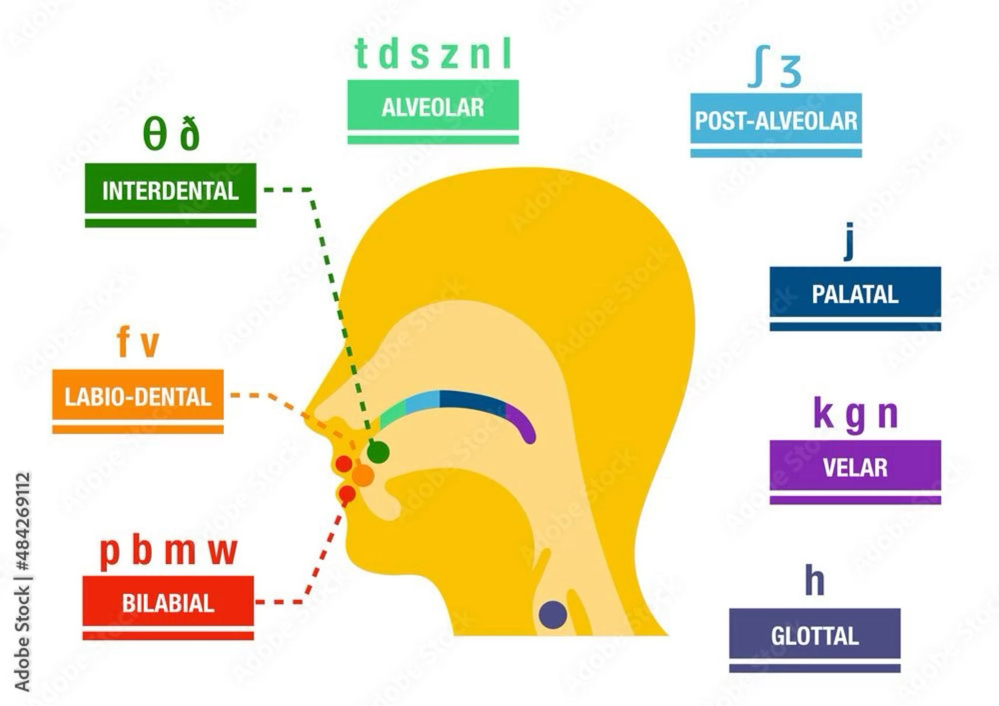
Bilabial
Both lips brought together.
- /p/ voiceless pay
- /b/ voiced bay
- /m/ voiced may
Labiodental
Lower lip raised towards the upper front teeth.
- /f/ voiceless safe
- /v/ voiced save
Dental
Tip of the tongue touches the upper front teeth.
- /θ/ voiceless oath
- /ð/ voiced clothe
Alveolar
Tip of the tongue towards the alveolar ridge.
- /t/ voiceless too
- /s/ voiceless sue
- /d/ voiced do
- /z/ voiced zoo
- /n/ voiced nook
- /l/ voiced look
- /r/ voiced rook
Palato-alveolar
Blade of the tongue towards the palate behind the alveolar ridge.
- /ʃ/ voiceless pressure
- /tʃ/ voiceless batch
- /ʒ/ voiced pleasure
- /dʒ/ voiced badge
Palatal
Further back towards the velum.
- /j/ voiced yes, yellow, beauty, new
Velar
Back of the tongue towards the soft palate (velum).
- /k/ voiceless back
- /g/ voiced bag
- /ŋ/ voiced bang
- /w/ voiced why (velar with lip rounding)
Glottal
Air passes through the narrowed glottis.
- /h/ high
'Place of Articulation | Consonant Sounds in English - Phonology' by Billie English
Consonants · Manner of Articulation
The manner of articulation is how the airflow is obstructed when producing a consonant sound.
Plosives
Complete closure, air blocked, released with a sudden burst of air.
- /p/ voiceless bilabial — park
- /b/ voiced bilabial — bark
- /t/ voiceless alveolar — tar
- /d/ voiced alveolar — dark
- /k/ voiceless velar — car
- /g/ voiced velar — guard
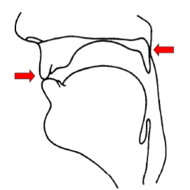
Fricatives
Near-closure creates friction noise.
- /f/ voiceless labiodental — wife
- /v/ voiced labiodental — wives
- /θ/ voiceless dental — breath
- /ð/ voiced dental — breathe
- /s/ voiceless alveolar — sink
- /z/ voiced alveolar — zinc
- /ʃ/ voiceless palato-alveolar — nation
- /ʒ/ voiced palato-alveolar — evasion
- /h/ glottal — help

Affricates
Plosive + fricative(stopped like plosive but released slowly like fricative instead of released with a sudden burst of air)
- /tʃ/ voiceless palato-alveolar — chin, rich
- /dʒ/ voiced palato-alveolar — gin, ridge
Nasals
Complete closure, velum lowered, air escapes through the nose.
- /m/ voiced bilabial — ram
- /n/ voiced alveolar — ran
- /ŋ/ voiced velar — rang
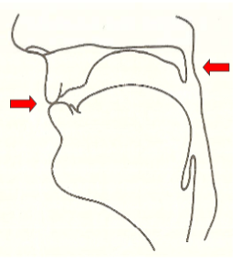
Laterals
Air escapes around the sides of the tongue.
- /l/ voiced alveolar lateral
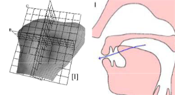
Approximants
Made by moving parts of your mouth close together but not close enough to make a friction so the air flows smoothly.
- /r/ alveolar / post-alveolar — right, brown
- /j/ palatal — use, youth
- /w/ velar / labio-velar with lip rounding — why, twin, square
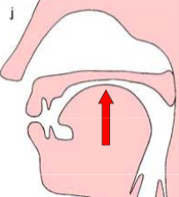
'Manner of Articulation | Consonant Sounds in English - Phonology' by Billie English
Voiced vs. Voiceless Consonants
Every consonant is either voiced or voiceless (also called unvoiced). The difference is what the vocal cords do while the sound is made — the place and manner of articulation stay the same.
- Voiced — the vocal cords vibrate as air passes between them. Put two fingers on your throat and say zzz — you feel a buzz. In English: /b, d, g, v, ð, z, ʒ, dʒ, m, n, ŋ, l, r, j, w/.
- Voiceless — the vocal cords are held apart and do not vibrate; only air and friction noise. Say sss — no buzz. In English: /p, t, k, f, θ, s, ʃ, tʃ, h/ (plus the glottal stop /ʔ/).
Voicing pairs
Most voiceless consonants have a voiced twin — same place and manner, only voicing differs.
- /p/ – /b/ voiceless voiced — pin / bin
- /t/ – /d/ voiceless voiced — tin / din
- /k/ – /g/ voiceless voiced — coat / goat
- /f/ – /v/ voiceless voiced — fan / van
- /θ/ – /ð/ voiceless voiced — thigh / thy
- /s/ – /z/ voiceless voiced — sip / zip
- /ʃ/ – /ʒ/ voiceless voiced — pressure / pleasure
- /tʃ/ – /dʒ/ voiceless voiced — chin / gin
'Voiced vs. Unvoiced Sounds: What’s the difference?' by Learning At The Primary Pond
Clear l & Dark l
/l/ is a voiced alveolar lateral approximant: the tip of the tongue touches the alveolar ridge while the air escapes around the sides of the tongue. English has two main realisations of /l/, and which one you use depends on where the /l/ stands in the syllable.
Clear l [l]
Used before a vowel (onset position). The front of the tongue is raised towards the hard palate, which gives a “light”, fronted resonance. It is the “normal” l of light.
- light /laɪt/
- long /lɒŋ/
- leave /liːv/
- lovely /ˈlʌvli/
- play /pleɪ/ · clean /kliːn/
- yellow /ˈjeləʊ/ · million /ˈmɪljən/
Dark l [ɫ]
Used before a consonant and word-finally (coda position). The back of the tongue is raised towards the velum — the sound is velarized — which gives a darker, heavier resonance. The phonetic symbol for it is [ɫ], though in broad transcription it is still written /l/.
- milk /mɪlk/ → [mɪɫk]
- ball /bɔːl/ → [bɔːɫ]
- feel /fiːl/ → [fiːɫ]
- help /help/ → [heɫp]
- cold /kəʊld/ → [kəʊɫd]
- table /ˈteɪbl̩/ — syllabic l
Summary
- Clear l [l] — before a vowel: light, long, play, lovely.
- Dark l [ɫ] — before a consonant or at the end of a word: milk, help, ball, feel.
'The Light L /l/ and Dark L [ɫ] in English' by Pronunciation with Emma
Vowels
Vowels are classified by tongue height, tongue backness,
lip rounding and length.
All vowels are voiced so it's not classified by voicing(unless you're whispering then all vowels are
voiceless).
Tongue height
- High (close): tongue raised close to the roof of the mouth — /iː/ see, /ɪ/ sit, /uː/ too, /ʊ/ put
- Mid: tongue halfway — /e/ bed, /ə/ banana, /ɜː/ girl, /ɔː/ door
- Low (open): tongue lowered, mouth more open — /æ/ cat, /ʌ/ cup, /ɑː/ car, /ɒ/ clock
Tongue backness
- Front: /iː/ see, /ɪ/ sit, /e/ bed, /æ/ cat
- Central: /ɜː/ girl, /ə/ banana, /ʌ/ cup
- Back: /uː/ too, /ʊ/ put, /ɔː/ door, /ɒ/ clock, /ɑː/ car
Lip rounding
- Rounded: /uː/, /ʊ/, /ɔː/, /ɒ/ — lips pushed forward
- Unrounded: all front & central vowels; also /ɑː/ (back but unrounded)
Length
Monophthong vs. Diphthong
- Monophthong — steady quality (one vowel): /iː/, /e/, /ɑː/, /ʌ/, /uː/, etc.
- Diphthong — gliding quality (a movement from one vowel to another): /eɪ/ take, /aɪ/ five, /əʊ/ no, /eə/ care
"Diphthongs in English | INTRODUCTION | Pronunciation | IPA" by Billie English
The suffix -s / -es (plural nouns & 3rd person singular)
The written suffix -s / -es is pronounced in one of three ways, depending on the final sound of the base word (never on its spelling). The same rule applies to plural regular nouns and to third-person singular verbs in the present tense.
/ɪz/ — after sibilants
Added when the base ends in a hissing or hushing sound: /s, z, ʃ, ʒ, tʃ, dʒ/. This adds a whole extra syllable.
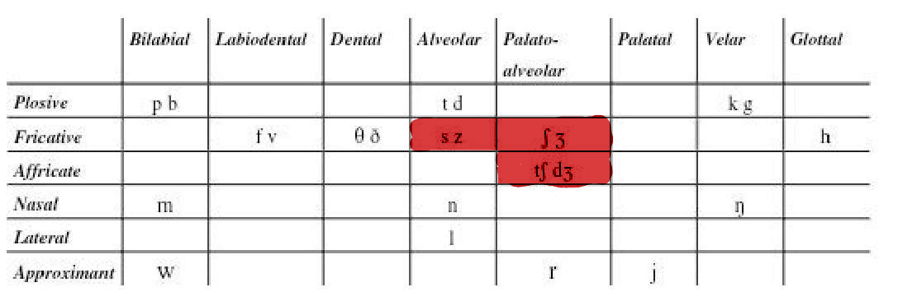
/ɪz/ after /s, z, ʃ, ʒ, tʃ, dʒ/
kiss → kisses /kɪs/ → /ˈkɪsɪz/
lose → loses /luːz/ → /ˈluːzɪz/
wish → wishes /wɪʃ/ → /ˈwɪʃɪz/
message → messages /ˈmesɪdʒ/ → /ˈmesɪdʒɪz/
teach → teaches /tiːtʃ/ → /ˈtiːtʃɪz/
judge → judges /dʒʌdʒ/ → /ˈdʒʌdʒɪz/
/s/ — after voiceless sounds
Added when the base ends in a voiceless consonant (other than the sibilants above): /p, t, k, f, θ/.
/s/ after /p, t, k, f, θ/
hit → hits /hɪt/ → /hɪts/
cough → coughs /kɒf/ → /kɒfs/
stop → stops /stɒp/ → /stɒps/
laugh → laughs /lɑːf/ → /lɑːfs/
bath → baths /bɑːθ/ → /bɑːθs/
/z/ — everywhere else
Added after all voiced sounds — voiced consonants /b, d, g, v, ð, m, n, ŋ, l, r/ and all vowels (vowels are voiced).
/z/ after voiced sounds & vowels
go → goes /ɡəʊ/ → /ɡəʊz/
love → loves /lʌv/ → /lʌvz/
run → runs /rʌn/ → /rʌnz/
play → plays /pleɪ/ → /pleɪz/
read → reads /riːd/ → /riːdz/
The suffix -ed / -d (regular past tense)
The written ending -ed also has three pronunciations, again decided by the final sound of the base verb. Only one of the three adds a syllable.
/ɪd/ — after /t/ or /d/
Added when the verb already ends in an alveolar plosive, /t/ or /d/. This adds a whole extra syllable.
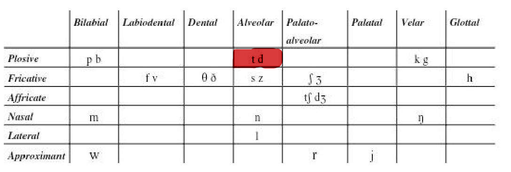
/ɪd/ after /t, d/
need → needed /niːd/ → /ˈniːdɪd/
wait → waited /weɪt/ → /ˈweɪtɪd/
want → wanted /wɒnt/ → /ˈwɒntɪd/
start → started /stɑːt/ → /ˈstɑːtɪd/
decide → decided /dɪˈsaɪd/ → /dɪˈsaɪdɪd/
/t/ — after voiceless sounds
Added when the verb ends in a voiceless consonant (other than /t/): /p, k, f, θ, s, ʃ, tʃ/.
/t/ after /p, k, f, θ, s, ʃ, tʃ/
stop → stopped /stɒp/ → /stɒpt/
like → liked /laɪk/ → /laɪkt/
kiss → kissed /kɪs/ → /kɪst/
watch → watched /wɒtʃ/ → /wɒtʃt/
laugh → laughed /lɑːf/ → /lɑːft/
breathe → breathed /briːð/ → /briːðd/
/d/ — everywhere else
Added after all voiced sounds (other than /d/) — voiced consonants /b, g, v, ð, z, ʒ, dʒ, m, n, ŋ, l, r/ and all vowels.
/d/ after voiced sounds & vowels
play → played /pleɪ/ → /pleɪd/
live → lived /lɪv/ → /lɪvd/
call → called /kɔːl/ → /kɔːld/
rob → robbed /rɒb/ → /rɒbd/
open → opened /ˈəʊpən/ → /ˈəʊpənd/
agree → agreed /əˈɡriː/ → /əˈɡriːd/
Function words vs. Content words
Content words (also called lexical words) carry the core meaning of the sentence — the “dictionary” information. They are an open class: new ones are created all the time (internet, selfie, download). Nouns, main verbs, adjectives and adverbs belong here. They are normally stressed and keep their full vowel sounds.
Function words (also called grammatical words) carry very little meaning on their own; they exist to show the grammatical relationships between the content words. They are a closed class: articles, prepositions, pronouns, auxiliaries, conjunctions, determiners and articles. They are normally unstressed and appear in weak forms with a reduced vowel (usually /ə/ or /ɪ/).
Examples
- Content:
table /ˈteɪbl̩/
running /ˈrʌnɪŋ/
beautiful /ˈbjuːtɪfl̩/
quickly /ˈkwɪkli/ - Function (strong → weak):
and /ænd/ → /ənd/ → /ən/
of /ɒv/ → /əv/
for /fɔː/ → /fə/
to /tuː/ → /tə/
have /hæv/ → /əv/
but /bʌt/ → /bət/
Main differences
- Meaning: content = lexical meaning; function = grammatical meaning.
- Class: content = open (new words appear); function = closed (fixed list).
- Stress: content words are usually stressed; function words are usually unstressed.
- Vowels: content words keep full vowels; function words reduce to weak forms.
- Connected speech: function words are the ones most affected by assimilation and linking (e.g. an illuminati → /ənɪluːmɪnˈɑːti/).
"More Natural English | Content and Function Words | Like A Native Speaker" by LikeANativeSpeaker
Citation form vs. Connected speech
Citation form is the isolated pronunciation of a word — the way it appears in a dictionary. It is produced slowly, carefully and with clear articulation, with the word's full (strong) form and full vowels, and with no influence from neighbouring sounds.
Connected speech is how words are actually pronounced in everyday, natural conversation. Words are not produced one by one; they form a continuous sequence of sounds in which each sound is affected by the sounds around it. This produces:
- Assimilation — ten players /ten ˈpleɪəz/ → /tem ˈpleɪəz/
- Linking — an apple /əˈnæpl̩/
- Weak forms — and /ænd/ → /ən/
- Gemination — black cat /blækːæt/
"Connected speech in English - why do we need it?" by Accent's Way English with Hadar
Linking
Linking (also called liaison) is the smooth joining of the final consonant of one word to the initial vowel of the next word, inside the same thought group. Instead of stopping after each word, the speaker pronounces the final consonant as if it began the following word, so the speech flows continuously.
The pattern is: consonant + vowel (C + V) across a word boundary.
- an apple /ən ˈæpl̩/ → /əˈnæpl̩/
- turn it off /tɜːn ɪt ɒf/ → /ˈtɜːnɪtɒf/
- pick it up /pɪk ɪt ʌp/ → /pɪkɪtʌp/
- not at all /nɒt ət ɔːl/ → /nɒtətɔːl/
- come in /kʌm ɪn/ → /kʌˈmɪn/
- find out /faɪnd aʊt/ → /faɪnˈdaʊt/
- take it easy /teɪk ɪt ˈiːzi/ → /teɪkɪtˈiːzi/
- leave it alone /liːv ɪt əˈləʊn/ → /liːvɪtəˈləʊn/
" 👄 Tim's pronunciation workshop: Consonant - vowel linking " by BBC Learning English
Gemination
Gemination (also called twinning or doubling) happens when the same consonant sound ends one word and begins the next one. Instead of pronouncing two separate consonants, the speaker holds the articulation once and lengthens it — the two sounds merge into one long consonant.
- black cat /blæk kæt/ → /blækːæt/
- big game /bɪg geɪm/ → /bɪgːeɪm/
- hot tea /hɒt tiː/ → /hɒtːiː/
- good day /gʊd deɪ/ → /gʊdːeɪ/
- some money /sʌm ˈmʌni/ → /sʌmːʌni/
- ten nails /ten neɪlz/ → /tenːeɪlz/
- this Saturday /ðɪs ˈsætədeɪ/ → /ðɪsːætədeɪ/
- book case /bʊk keɪs/ → /bʊkːeɪs/
- night time /naɪt taɪm/ → /naɪtːaɪm/
"What is gemination? | Consonant lengthening & Twinning in Connected Speech" by Billie English
Assimilation
Assimilation is the process by which a sound changes in order to become more like a neighbouring sound. It makes speech smoother and easier to pronounce, because the articulators do not have to move as far or as fast between two positions. The change is usually in the place of articulation but in the case of palato-alveolarization when the previous word ends either in /d/ or /t/, there's a change in the manner of articulation(from plosive to affricate).
Bilabialization
/d/ + /p,m,b/ = /b/ bad men /bæd men/ → /bæb men/
good morning /gʊd ˈmɔːnɪŋ/ → /gʊb ˈmɔːnɪŋ/
red pen /red pen/ → /reb pen/
good boy /gʊd bɔɪ/ → /gʊb bɔɪ/
handbag /ˈhændbæg/ → /ˈhæmbæg/

/t/ + /p,m,b/ = /p/ that man /ðæt mæn/ → /ðæp mæn/
that boy /ðæt bɔɪ/ → /ðæp bɔɪ/
white paper /waɪt ˈpeɪpə/ → /waɪp ˈpeɪpə/
don't be late /dəʊnt biː leɪt/ → /dəʊmp biː leɪt/

/n,ŋ/ + /p,m,b/ = /m/ ten players /ten ˈpleɪəz/ → /tem ˈpleɪəz/
in my /ɪn maɪ/ → /ɪm maɪ/
one moment /wʌn ˈməʊmənt/ → /wʌm ˈməʊmənt/
can be /kæn biː/ → /kæm biː/

Alveolarization
/ŋ/ + /t,d,n/ = /n/ learning to drive /ˈlɜːnɪŋ tə draɪv/ → /ˈlɜːnɪntə draɪv/
going to /ˈgəʊɪŋ tə/ → /ˈgəʊɪntə/
wrong number /rɒŋ ˈnʌmbə/ → /rɒn ˈnʌmbə/
sing to me /sɪŋ tə miː/ → /sɪn tə miː/
long time /lɒŋ taɪm/ → /lɒn taɪm/
long day /lɒŋ deɪ/ → /lɒn deɪ/
kingdom /ˈkɪŋdəm/ → /ˈkɪndəm/
something to eat /ˈsʌmθɪŋ tə iːt/ → /ˈsʌmθɪn tə iːt/

Palato-alveolarization
/d/ + /j/ = /dʒ/ did you /dɪd juː/ → /dɪdʒuː/
would you /wʊd juː/ → /wʊdʒuː/
could you /kʊd juː/ → /kʊdʒuː/
need you /niːd juː/ → /niːdʒuː/
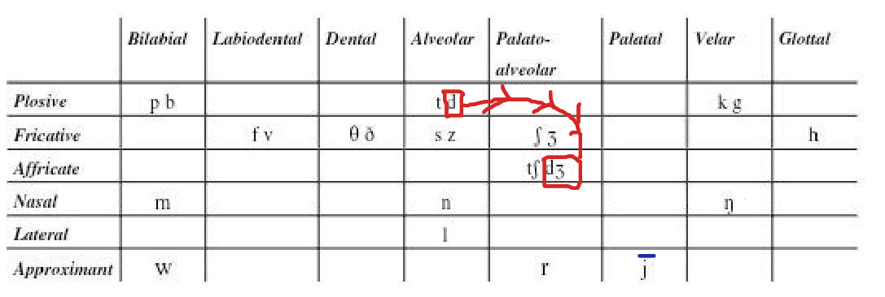
/t/ + /j/ = /tʃ/ want you /wɒnt juː/ → /wɒntʃuː/
don't you /dəʊnt juː/ → /dəʊntʃuː/
can't you /kɑːnt juː/ → /kɑːntʃuː/
meet you /miːt juː/ → /miːtʃuː/
last year /lɑːst jɪə/ → /lɑːstʃɪə/

/s/ + /ʃ,tʃ,dʒ,j/ = /ʃ/ this shop /ðɪs ʃɒp/ → /ðɪʃɒp/
miss you /mɪs juː/ → /mɪʃuː/
this year /ðɪs jɪə/ → /ðɪʃɪə/
nice shoes /naɪs ʃuːz/ → /naɪʃuːz/

/z/ + /ʃ,tʃ,j/ = /ʒ/ has she /hæz ʃiː/ → /hæʒʃiː/
does she /dʌz ʃiː/ → /dʌʒʃiː/
as you like /əz juː laɪk/ → /əʒuː laɪk/
is your /ɪz jɔː/ → /ɪʒɔː/
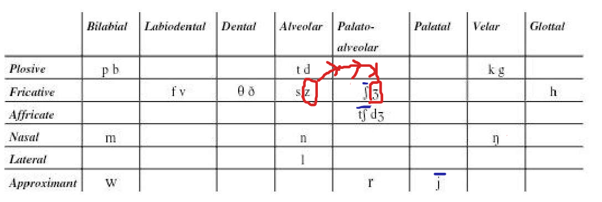
Velarization
/t/ + /k,g/ = /k/ that girl /ðæt gɜːl/ → /ðæk gɜːl/
white coat /waɪt kəʊt/ → /waɪk kəʊt/
hot cakes /hɒt keɪks/ → /hɒk keɪks/
it came /ɪt keɪm/ → /ɪk keɪm/
sweet girl /swiːt gɜːl/ → /swiːk gɜːl/

/d/ + /k,g/ = /g/ good guy /gʊd gaɪ/ → /gʊg gaɪ/
red car /red kɑː/ → /reg kɑː/
bad cold /bæd kəʊld/ → /bæg kəʊld/
could go /kʊd gəʊ/ → /kʊg gəʊ/
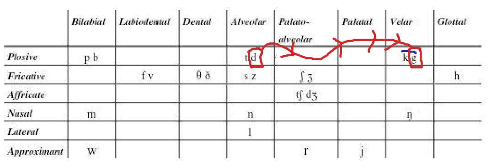
/n/ + /k,g/ = /ŋ/ ten cups /ten kʌps/ → /teŋ kʌps/
in case /ɪn keɪs/ → /ɪŋ keɪs/
sun cream /sʌn kriːm/ → /sʌŋ kriːm/
green grass /griːn grɑːs/ → /griːŋ grɑːs/
own goal /əʊn gəʊl/ → /əʊŋ gəʊl/

"What is Assimilation? | Connected Speech | English Pronunciation" by Billie English
Linking R in brittish English
Linking R
The word is spelled with an “r” (or “re”) at the end — far, four, here, better, mother. Said alone, or before a consonant, the /r/ is silent. But when the next word begins with a vowel, that /r/ is pronounced and “links” the two words together. The /r/ was always historically there; it is simply kept.
- far away /fɑː əˈweɪ/ → /fɑːr əˈweɪ/
- four apples /fɔː ˈæpl̩z/ → /fɔːr ˈæpl̩z/
- here and there /hɪə ənd ðeə/ → /hɪər ənd ðeə/
- better and better /ˈbetə ənd ˈbetə/ → /ˈbetər ənd ˈbetə/
- mother and father /ˈmʌðə ənd ˈfɑːðə/ → /ˈmʌðər ənd ˈfɑːðə/
- her own /hɜː əʊn/ → /hɜːr əʊn/
- your uncle /jɔː ˈʌŋkl̩/ → /jɔːr ˈʌŋkl̩/
- more or less /mɔː ɔː les/ → /mɔːr ɔː les/
- after all /ˈɑːftə ɔːl/ → /ˈɑːftər ɔːl/
- a pair of shoes /ə peə əv ʃuːz/ → /ə peər əv ʃuːz/
"👄 The linking /r/: Tim's pronunciation workshop" by BBC Learning English
Transcription hints
Practical tips for making transcriptions, so you make sure you don’t mess up:
- Use / / for broad (phonemic) and [ ] for narrow (allophonic) transcription.
- Always mark primary stress ˈ before the stressed syllable.
- Transcribe what you hear, not the spelling (for example ‘going to’ = /ˈɡəʊɪŋ tə/).
- There are no capital letters, commas, full stops/periods, question marks in transcriptions.
- The symbol | is used to mark a point where a speaker of the text might introduce a brief pause. Oftentimes this coincides with a place where a punctuation mark is present on the text, but not always.
- * is used to indicate that the following word is a name.
- Many words in connected speech are pronounced (and should be transcribed) differently in different environments.
- Be careful to think about how speech sounds and to avoid being misled by the spelling.
- Sometimes the ordinary spelling version uses letters which do not correspond to any sound at all, so they shouldn’t appear in transcription.
/ / = broad (phonemic)
[ ] = narrow (allophonic)
ˈ = primary stress
| = brief pause
* = the next word is a name.
Transcription for Brittish Weak Forms words + Standard US Equivalents
Transcription examples with everything from connected speech applied
-
I can't get this coat clean

-
She's a good player and can win games against people.
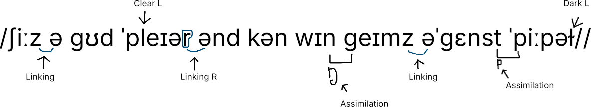
-
My son made this.
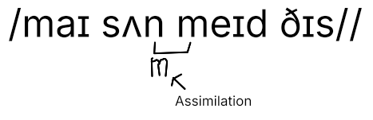
-
We had a bad year.
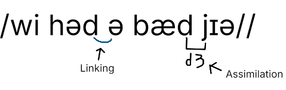
-
Have you ever tried Belgian beer?
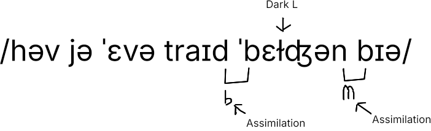
-
She looked tired after she had gone to the gym.
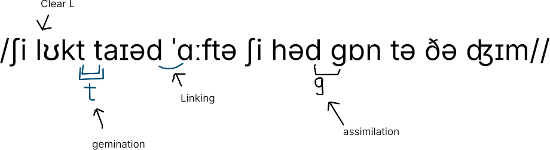
-
My little brother left all his books on the small table in the living room

-
The big green dog disappeared behind the door and came back in the evening.
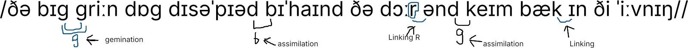
Escrita: Grammar · Conjunctions (and, but, or, so, because)
We use these words (conjunctions) to join two sentences. They make one longer sentence from two shorter sentences.
Sentence A + Sentence B
The car stopped. + The driver got out.
→ The car stopped and the driver got out.
and / but / or
- and — adds information or joins similar actions/things.
I got home, had something to eat, sat down in an armchair and fell asleep.
Ann is at work, Sue has gone shopping and Chris is playing football. - but — shows a contrast or opposing idea.
My sister is married but she lives in London.
He doesn't like her but she doesn't like him. - or — shows a choice between two things.
Do you want to go out or are you too tired?
so (the result of something)
Use so when the second sentence is the result of the first.
Result
It was very hot, so I opened the window.
The water wasn't clean, so we didn't go swimming.
They like films, so they often go to the cinema.
because (the reason for something)
Use because when the second sentence is the reason for the first.
Reason
I opened the window because it was very hot.
We didn't go swimming because the water wasn't clean.
Lisa is hungry because she didn't have breakfast.
Because the water wasn't clean, we didn't go swimming.
More than one conjunction
In these examples there is more than one conjunction:
- It was late and I was tired, so I went to bed.
- I always enjoy visiting London, but I wouldn't like to live there because it's too big.
Exercises
09.1 Write sentences. Choose from the boxes and use and/but/or.
Box A:
I stayed at home.
I bought a newspaper.
I went to the window.
I wanted to phone you.
I jumped into the river.
I usually drive to work.
Box B:
Do you want me to come with you?
I didn't have your number.
Shall I wait here?
I didn't read it.
I went by bus this morning.
I watched television.
I swam to the other side.
I looked out.
Show Unsolved Questions
- 1. I stayed at home and watched television. (Example)
- 2. I bought a newspaper but I didn't read it. (Example)
- 3. I .......................................................................................
- 4. ..........................................................................................
- 5. ..........................................................................................
- 6. ..........................................................................................
- 7. ..........................................................................................
Show Answers
There are multiple valid combinations. Here are some examples:
- 3. I went to the window and looked out.
- 4. I wanted to phone you but I didn't have your number.
- 5. I jumped into the river and swam to the other side.
- 6. I usually drive to work but I went by bus this morning.
- 7. Do you want me to come with you or shall I wait here?
09.2 Look at the pictures and complete the sentences. Use and/but/so/because.
(Descriptions of pictures to help you: 1. Hot man opening window. 2. Rain outside, tennis rackets, sad
people. 3. Museum with 'CLOSED' sign. 4. Bill refusing a sandwich. 5. Ann in traffic, saying 'Sorry I'm
late'. 6. Sue saying goodbye to a driver.)
Show Unsolved Questions
- 1. It was very hot, so he opened the window. (Example)
- 2. They didn't play tennis ..........................................................................
- 3. They went to the museum ..........................................................................
- 4. Bill wasn't hungry, ....................................................................................
- 5. Ann was late ................................................................................................
- 6. Sue said goodbye ........................................................................................
Show Answers
- 2. They didn't play tennis because it was raining.
- 3. They went to the museum but it was closed.
- 4. Bill wasn't hungry, so he didn't eat the sandwich.
- 5. Ann was late because there was a lot of traffic.
- 6. Sue said goodbye and drove away.
09.3 Write sentences about what you did yesterday. Use and/but etc.
Show Unsolved Questions
- 1. (and) In the evening I stayed at home and studied. (Example)
- 2. (because) I went to bed very early because I was tired. (Example)
- 3. (but) ..........................................................................................
- 4. (and) ..........................................................................................
- 5. (so) ............................................................................................
- 6. (because) .......................................................................................
Show Sample Answers
These are personal, so answers will vary. Here are some examples of how to use the conjunctions correctly:
- 3. (but) I wanted to go to the gym but I was too tired.
- 4. (and) I woke up early and went for a run.
- 5. (so) It was raining heavily, so I took an umbrella.
- 6. (because) I didn't eat lunch because I wasn't hungry.
Escrita: Grammar · am/is/are
Unit 1: am/is/are (Positive and Negative)
The verb be has three forms in the present tense: am, is, and are. We often use short forms (contractions) in spoken and informal English.
I am (I'm)
he / she / it is (he's / she's / it's)
we / you / they are (we're / you're / they're)
I am not (I'm not)
he / she / it is not (he's not / he isn't)
we / you / they are not (we're not / you aren't)
Examples
I'm cold. Can you close the window, please?
My brother is very tall. He's a policeman.
Ann and I are good friends.
I'm tired but I'm not hungry.
Jane isn't at home at the moment. She's at work.
Those people aren't English. They're Australian.
that's = that is (That's very kind of you.)
there's = there is (Look! There's Chris.)
here's = here is ('Here's your key.' 'Thank you.')
Unit 2: am/is/are (Questions)
To make a question, we put am, is, or are before the subject.
Question Form
Am I late? — No, you're on time.
Is your mother at home? — No, she's out.
Are your parents at home? — No, they're out.
Is it cold in your room? — Yes, a little.
Is she at home? (NOT Is at home she?)
Are your shoes new? (NOT Are new your shoes?)
Wh- Questions
We can also use question words like Where, What, Who, How, Why.
Examples
Where is your mother? Is she at home?
What colour is your car? — It's red.
How are your parents? Are they well?
How much are these postcards? — Fifty pence.
Common contractions: what's (what is), who's (who is), how's (how is), where's (where is).
Short Answers
When answering yes/no questions with be, we usually use a short answer. We do not use contractions in positive short answers.
Yes, I am.
Yes, he/she/it is.
Yes, we/you/they are.
No, I'm not.
No, he/she/it isn't.
No, we/you/they aren't.
- 'Are you tired?' 'Yes, I am.'
- 'Are you hungry?' 'No, I'm not but I'm thirsty.'
- 'Is your friend English?' 'Yes, he is.'
- 'Are these your keys?' 'Yes, they are.'
- 'That's my seat.' 'No, it isn't.'
Exercises
1.1 Write the short form (she's / we aren't etc.).
Show Unsolved Questions
- 1. she is → ........................
- 2. they are → ........................
- 3. it is not → ........................
- 4. that is → ........................
- 5. I am not → ........................
- 6. you are not → ........................
Show Answers
- 1. she's
- 2. they're
- 3. it isn't / it's not
- 4. that's
- 5. I'm not
- 6. you aren't / you're not
1.2 Put in am, is or are.
Show Unsolved Questions
- 1. The weather ........................ nice today.
- 2. I ........................ tired.
- 3. This bag ........................ heavy.
- 4. These bags ........................ heavy.
- 5. Look! There ........................ a car outside.
- 6. My brother and I ........................ good friends.
- 7. Ann ........................ at home.
- 8. I ........................ hungry.
Show Answers
- 1. The weather is nice today.
- 2. I am tired.
- 3. This bag is heavy.
- 4. These bags are heavy.
- 5. Look! There is a car outside.
- 6. My brother and I are good friends.
- 7. Ann is at home.
- 8. I am hungry.
2.1 Find the right answers for the questions.
Questions:
1. Where's the camera?
2. Is your car blue?
3. Is Linda from London?
4. Am I late?
5. Where's Ann from?
6. What colour is your bag?
7. Are you hungry?
8. How is George?
9. Who's that woman?
Answers:
A. London.
B. No, I'm not.
C. Yes, you are.
D. My sister.
E. Black.
F. No, it's black.
G. In your bag.
H. No, she's American.
I. Very well.
Show Unsolved Questions
- 1. ........................
- 2. ........................
- 3. ........................
- 4. ........................
- 5. ........................
- 6. ........................
- 7. ........................
- 8. ........................
- 9. ........................
Show Answers
- 1. G (In your bag.)
- 2. F (No, it's black.)
- 3. H (No, she's American.)
- 4. C (Yes, you are.)
- 5. A (London.)
- 6. E (Black.)
- 7. B (No, I'm not.)
- 8. I (Very well.)
- 9. D (My sister.)
2.2 Make questions with these words. Use is or are.
Show Unsolved Questions
- 1. (at home / your mother?) → ........................................................
- 2. (your parents / well?) → ........................................................
- 3. (interesting / your job?) → ........................................................
- 4. (the shops / open today?) → ........................................................
- 5. (interested in sport / you?) → ........................................................
- 6. (near here / the post office?) → ........................................................
- 7. (at school / your children?) → ........................................................
- 8. (why / you / late?) → ........................................................
Show Answers
- 1. Is your mother at home?
- 2. Are your parents well?
- 3. Is your job interesting?
- 4. Are the shops open today?
- 5. Are you interested in sport?
- 6. Is the post office near here?
- 7. Are your children at school?
- 8. Why are you late?
2.3 Complete the questions. Use What... / Who... / Where... / How...
Show Unsolved Questions
- 1. ........................ are your parents? — They're very well.
- 2. ........................ the bus stop? — At the end of the street.
- 3. ........................ your children? — Five, six and ten.
- 4. ........................ these oranges? — £1.20 a kilo.
- 5. ........................ your favourite sport? — Skiing.
- 6. ........................ the man in this photograph? — That's my father.
- 7. ........................ your new shoes? — Black.
Show Answers
- 1. How are your parents?
- 2. Where is the bus stop?
- 3. How old are your children?
- 4. How much are these oranges?
- 5. What is your favourite sport?
- 6. Who is the man in this photograph?
- 7. What colour are your new shoes?
2.4 Write the questions. (Read the answers first.)
Show Unsolved Questions
- 1. (name?) ........................................................ — Paul.
- 2. (married or single?) ........................................................ — I'm married.
- 3. (American?) ........................................................ — No, I'm Australian.
- 4. (how old?) ........................................................ — I'm 30.
- 5. (a teacher?) ........................................................ — No, I'm a lawyer.
- 6. (wife a lawyer?) ........................................................ — No, she's a designer.
- 7. (from?) ........................................................ — She's Italian.
- 8. (her name?) ........................................................ — Anna.
- 9. (how old?) ........................................................ — She's 27.
Show Answers
- 1. What's your name?
- 2. Are you married or single?
- 3. Are you American?
- 4. How old are you?
- 5. Are you a teacher?
- 6. Is your wife a lawyer?
- 7. Where is she from?
- 8. What's her name?
- 9. How old is she?
2.5 Write short answers (Yes, I am. / No, he isn't. etc.).
Show Unsolved Questions
- 1. Are you married? → No, I'm not. (Example)
- 2. Are you thirsty? → ........................................................
- 3. Is it cold today? → ........................................................
- 4. Are your hands cold? → ........................................................
- 5. Is it dark now? → ........................................................
- 6. Are you a teacher? → ........................................................
Show Sample Answers
These depend on the real-world situation, but here are logical examples:
- 2. Yes, I am. / No, I'm not.
- 3. Yes, it is. / No, it isn't.
- 4. Yes, they are. / No, they aren't.
- 5. Yes, it is. / No, it isn't.
- 6. Yes, I am. / No, I'm not.
Escrita: Grammar · Present Time
Present Simple: Form
Form the present simple with the infinitive form of the verb (without to). Add -s in the third person singular he/she/it.
I have / You have / He/She/It has / We have / They have
I am / You are / He/She/It is / We are / They are
Spelling changes: Verbs ending in -o, -s, -ch, -sh, -x add -es for the third person singular.
- He goes · She misses · She watches · He wishes · He relaxes
Present Simple: Questions & Negatives
Questions: Form yes/no questions with do + the infinitive (without to). Use does for he/she/it.
- Do you like Italian food?
- Does she like Italian food?
- What do you want?
- Where does she live?
Negatives: Form negatives with do not + the infinitive. Use does not for he/she/it.
- I do not like that. → I don't like that.
- She does not like that. → She doesn't like that.
Present Simple: Meaning & Pronunciation
The present simple can describe:
- Habitual actions. I usually get up at 7.30.
- Actions and situations that are generally or usually true. Liz plays in the school basketball team.
- Facts which are always true. The sun rises in the east.
Pronunciation: Verbs which end in /z/, /dʒ/, /s/, /ʃ/, /tʃ/ and /ks/ have an extra syllable in the third person, pronounced /ɪz/.
- watches /ˈwɒtʃɪz/ · misses /ˈmɪsɪz/ · relaxes /rɪˈlæksɪz/
- After /f/, /k/, /p/, /t/, third person sound is /s/: hits /hɪts/
- Other third person -s endings are pronounced as /z/: sees /siːz/
Present Continuous: Form
Form the present continuous with the auxiliary be and the -ing form of the main verb.
- I am relaxing. / You are relaxing. / He/She is relaxing.
- We are relaxing. / They are relaxing.
Spelling changes:
- Verbs ending -e drop the -e when they add -ing. (like → liking, decide → deciding, write → writing)
- Verbs with one syllable, ending in one vowel and one consonant, double the consonant. (sit → sitting, swim → swimming, dig → digging)
- Verbs ending -ie change -ie to -y. (lie → lying, tie → tying, die → dying)
Questions: Put the auxiliary be before the subject.
- Are you writing?
- Is he writing?
- What are you writing?
Negatives: Use the verb be + not.
- I am not writing. / I 'm not writing.
- He is not writing. / He isn't writing.
- They are not writing. / They aren't writing.
Present Continuous: Meaning
Use the present continuous to describe:
- Actions in progress at the present moment. Sorry, I can't speak to you, I'm washing my hair.
- Actions happening 'around now', but not at the moment of speaking. I'm reading The Lord of the Rings.
- Future meanings (fixed future arrangements). Paul is leaving early tomorrow morning.
Frequency Adverbs
Frequency adverbs explain how often something happens. The adverb usually comes between the subject and the verb.
- always (✓✓✓✓) — I always get up at 7.00.
- usually (✓✓✓✓) — It usually rains when I go on holiday!
- often (✓✓✓) — Pat often goes to football matches.
- sometimes (✓✓) — We sometimes eat pizza for lunch.
- rarely (✓) — Jane rarely listens to jazz.
- never (-) — My bus never arrives on time.
Jim is usually late.
Present continuous with always: We can use always with the present continuous when we are exaggerating or complaining. We emphasize always in speech.
- You're always forgetting your keys!
State Verbs vs. Action Verbs
A state is when something stays the same. An action is when something happens. State verbs are not usually used in any continuous form.
- I know what you mean. (NOT I am knowing what you're meaning.)
Examples of state verbs:
- Senses: appear, hear, look like, see, taste
- Feeling: like, hate, love, prefer, want, wish
- Thinking: agree, believe, forget, know, think, understand
- Possession: belong to, contain, have, own
- Being: be, exist
- Other: cost, depend on, mean, need
I have two sisters. (permanent state)
I'm having problems with this computer. (temporary action)
This cake tastes wonderful. (state)
I'm tasting the soup. (action)
Present Simple vs. Present Continuous
| Present simple | Present continuous |
|---|---|
| permanent | temporary |
| habits and routines | in progress now |
| facts that are always true | events happening at the moment |
| general situations | a particular situation |
| I live in Budapest. (all the time) | I'm living in Budapest. (for a few months) |
| This plane lands in Frankfurt. (routine) | We're landing. (in progress now) |
Exercises
1. Underline the correct phrase in each sentence.
Show Unsolved Questions
- 1. What time go you / do you go to bed on Saturdays?
- 2. Why are you waiting / do you waiting outside the door?
- 3. Don't ask Tim. He doesn't know / not knows the answer.
- 4. I having / I'm having my lunch at the moment.
- 5. When you leave / do you leave the house in the morning?
- 6. I don't understand. What is happening / is happen?
- 7. Excuse me, does you know / do you know the time?
- 8. This is a great party. I'm having / Am I having a lovely time.
Show Answers
- 1. do you go
- 2. are you waiting
- 3. doesn't know
- 4. I'm having
- 5. do you leave
- 6. is happening
- 7. do you know
- 8. I'm having
2. Read the answers and then complete the questions.
Show Unsolved Questions
- 1. Where ........................................................................?
Sue? She lives at the end of Axwell Road. - 2. Do ........................................................................?
Jim? No, I don't know him. - 3. What ........................................................................?
At the moment? I'm doing my homework. - 4. Are ........................................................................?
Here? No, I'm sitting over there. - 5. Do ........................................................................?
Here? No, we change trains at the next station. - 6. Why ........................................................................?
I'm wearing two pullovers because I feel cold!
Show Answers
- 1. does Sue live
- 2. you know Jim
- 3. are you doing
- 4. you sitting here
- 5. we change trains here
- 6. are you wearing two pullovers
3. Rewrite each sentence so that the verb in italics is a negative contraction.
Show Unsolved Questions
- 1. Naomi and Bill are watching
television.
........................................................................ - 2. Peter likes chocolate
cake.
........................................................................ - 3. I'm using this pencil at the
moment.
........................................................................ - 4. The children are having lunch in the
kitchen.
........................................................................ - 5. I get up early on
Saturday.
........................................................................ - 6. Elena is writing a
novel.
........................................................................
Show Answers
- 1. Naomi and Bill aren't watching television.
- 2. Peter doesn't like chocolate cake.
- 3. I'm not using this pencil at the moment.
- 4. The children aren't having lunch in the kitchen.
- 5. I don't get up early on Saturday.
- 6. Elena isn't writing a novel.
4. Complete each sentence with a present simple or present continuous form of the words in bold.
Show Unsolved Questions
- 1. you like — Do ........................................ cheese sandwiches?
- 2. the sun rise — What time ........................................?
- 3. you read — What ........................................?
- 4. I have — I'll talk to you later. ........................................ a bath.
- 5. not use computers — We ........................................ at school.
- 6. it snow — Look out of the window! ........................................
- 7. you talk — This is an examination! Why ........................................?
- 8. go — Ann ........................................ to school by bus every day.
- 9. you wear — ........................................ a uniform at your school?
- 10. she build — Pat has got an interesting hobby. ........................................ a boat.
Show Answers
- 1. Do you like cheese sandwiches?
- 2. What time does the sun rise?
- 3. What are you reading?
- 4. I'll talk to you later. I'm having a bath.
- 5. We don't use computers at school.
- 6. Look out of the window! It's snowing!
- 7. This is an examination! Why are you talking?
- 8. Ann goes to school by bus every day.
- 9. Do you wear a uniform at your school?
- 10. Pat has got an interesting hobby. She is building a boat. (or She builds)
5. Choose the correct spelling from each pair of words.
Show Unsolved Questions
- 1. writing / writeing
- 2. diging / digging
- 3. takeing / taking
- 4. decideing / deciding
- 5. swiming / swimming
- 6. haveing / having
- 7. lieing / lying
- 8. reading / raeding
- 9. useing / using
- 10. waitting / waiting
- 11. washeing / washing
- 12. rideing / riding
- 13. flyeing / flying
- 14. studing / studying
- 15. goeing / going
Show Answers
- 1. writing
- 2. digging
- 3. taking
- 4. deciding
- 5. swimming
- 6. having
- 7. lying
- 8. reading
- 9. using
- 10. waiting
- 11. washing
- 12. riding
- 13. flying
- 14. studying
- 15. going
1. Underline the correct sentence for each situation.
Show Unsolved Questions
- 1. You want to invite a friend to your party on Friday. You say:
a) I have a party on Friday. Do you want to come?
b) I'm having a party on Friday. Do you want to come? - 2. You find a wallet on your desk and ask the people nearby:
a) Who does this wallet belong to?
b) Who is this wallet belonging to? - 3. A friend invites you to a snack bar at lunch time. You say:
a) Thanks, but I always go home.
b) Thanks, but I'm always going home. - 4. A friend opens the door and says: What are you doing? You reply:
a) I work as a secretary.
b) I'm repairing the computer. - 5. You haven't decided yet about buying a new bike. You say:
a) I think about it.
b) I'm thinking about it. - 6. A friend asks: Do you like lemon tea? You reply:
a) I prefer tea with milk.
b) I'm preferring tea with milk. - 7. A friend asks you if you have finished the book she lent you. You say:
a) Sorry, I still read it.
b) Sorry, I'm still reading it. - 8. It's a hot day, but a friend has a heavy coat on. You ask:
a) Why do you wear a heavy coat?
b) Why are you wearing a heavy coat?
Show Answers
- 1. b) I'm having a party on Friday. Do you want to come?
- 2. a) Who does this wallet belong to?
- 3. a) Thanks, but I always go home.
- 4. b) I'm repairing the computer.
- 5. b) I'm thinking about it.
- 6. a) I prefer tea with milk.
- 7. b) Sorry, I'm still reading it.
- 8. b) Why are you wearing a heavy coat?
2. Underline the correct word or phrase in each sentence.
Show Unsolved Questions
- 1. That can't be right! I don't believe / I'm not believing it!
- 2. Caroline can't swim today. She has / is having a cold.
- 3. See you in the morning. I leave / I'm leaving now.
- 4. What do you do / are you doing? If you drop it, it will explode!
- 5. Stop doing that, Bill! You're / You're being very silly.
- 6. I drive / I'm driving! You can sit in the back with Martin.
- 7. What do we eat / are we eating this evening? I'm really hungry!
- 8. You're a great cook! This cake tastes / is tasting wonderful.
- 9. Where do you go / are you going? I haven't finished speaking to you!
- 10. Chemistry is hard. I don't understand / I'm not understanding it.
Show Answers
- 1. I don't believe
- 2. has
- 3. I'm leaving
- 4. are you doing
- 5. You're being
- 6. I'm driving
- 7. are we eating
- 8. tastes
- 9. are you going
- 10. I don't understand
3. Put each verb in brackets into the present simple or present continuous.
Show Unsolved Questions
- 1. Ugh, take it away! I (hate) ........................ mice!
- 2. Who (you, go) ........................ to the match on Saturday with?
- 3. In the winter, what (you, wear) ........................?
- 4. I can't stand horror films. I (think) ........................ they're silly!
- 5. Diana (not, usually, sit) ........................ next to Ellen.
- 6. Why (you, look at) ........................ me like that?
- 7. Excuse me. (this bus, stop) ........................ outside the station?
- 8. I (not take) ........................ the bus to school today.
Show Answers
- 1. I hate mice!
- 2. Who are you going to the match on Saturday with?
- 3. In the winter, what do you wear?
- 4. I can't stand horror films. I think they're silly!
- 5. Diana doesn't usually sit next to Ellen.
- 6. Why are you looking at me like that?
- 7. Excuse me. Does this bus stop outside the station?
- 8. I am not taking the bus to school today.
4. Match each sentence (1-8) with a suitable response (a-h).
Sentences:
1. What do you usually do on your birthday?
2. Would you like to meet again on Saturday?
3. What do you usually do at the weekend?
4. Have you finished your homework?
5. What are you doing?
6. What are you doing on Friday?
7. Are you in the school basketball team?
8. What do you do?
Responses:
a. I have a party.
b. I go out cycling with my friends.
c. I work in a travel agency.
d. Yes, we play every Friday.
e. I'm still doing it.
f. It's hot in here. I'm opening some windows.
g. I'm going back to Canada tomorrow.
h. I'm having a party.
Show Unsolved Questions
- 1. ..........
- 2. ..........
- 3. ..........
- 4. ..........
- 5. ..........
- 6. ..........
- 7. ..........
- 8. ..........
Show Answers
- 1. h (I'm having a party.)
- 2. g (I'm going back to Canada tomorrow.)
- 3. b (I go out cycling with my friends.)
- 4. e (I'm still doing it.)
- 5. f (It's hot in here. I'm opening some windows.)
- 6. a (I have a party.)
- 7. d (Yes, we play every Friday.)
- 8. c (I work in a travel agency.)
5. Put each verb in brackets into the present simple or present continuous.
Show Unsolved Questions
- 1. What (usually, you, do) ........................ after school?
- 2. Don't worry about the cat. It (only, eat) ........................ once a day.
- 3. I can't work out the answer. (you, know) ........................ what it is?
- 4. What's the matter? Why (you, stare) ........................ at me like that?
- 5. (you, speak) ........................ English? I'm looking for a hotel.
- 6. Elena (stay) ........................ with me while her house is being decorated.
- 7. You should go on a diet. (you, put) ........................ on weight.
- 8. (they, speak) ........................ French or German? I can't tell the difference.
Show Answers
- 1. What do you usually do after school?
- 2. Don't worry about the cat. It only eats once a day.
- 3. I can't work out the answer. Do you know what it is?
- 4. What's the matter? Why are you staring at me like that?
- 5. Do you speak English? I'm looking for a hotel.
- 6. Elena is staying with me while her house is being decorated.
- 7. You should go on a diet. You are putting on weight.
- 8. Do they speak French or German? I can't tell the difference.
Escrita: Grammar · Past Time 1
Past Simple: Form
Form the past simple of regular verbs by adding -ed to the infinitive (without to). For verbs ending in -e, only add -d.
- I enjoyed the film.
- I loved the music.
- She decided to stay.
- They opened the box.
The form is the same for I, you, he, she, it, we, they.
Spelling changes:
- Verbs ending in consonant + -y change -y to
-ie.
try → tried, cry → cried - Verbs ending with one vowel and one consonant double the final consonant.
regret → regretted, fit → fitted
Irregular verbs: There is a list of the most common irregular verbs on page 268 of the textbook. It is necessary to learn these forms.
- eat → ate · drink → drank · wake → woke
Questions: Form questions with did + the infinitive (without to).
- Did you enjoy the film?
- Did you drink all the milk?
- What did you do yesterday?
- Why did she leave?
Negatives: Form negatives with did not + the infinitive without to. (Short form: didn't).
- The coat did not fit me. → The coat didn't fit me.
- Carol did not eat very much. → Carol didn't eat very much.
Past Simple: Meaning
- Actions and states in a completed period of time.
I enjoyed the film we saw last night.
We listened to some new CDs yesterday afternoon. - Habitual actions in the past.
Every day we got up early and went to the beach.
Past Continuous: Form
Form the past continuous with the past of the auxiliary be and the -ing form of the main verb.
- I was sitting by the door. / You were laughing. / He was driving.
- We were crying. / They were eating.
Questions: Form yes/no questions by putting the auxiliary be before the subject.
- Was I sleeping?
- Were you waiting?
- What were you writing?
Negatives: Form negatives with the auxiliary be + not and the -ing form.
- I was not listening. / I wasn't listening.
- He was not playing. / He wasn't playing.
- They were not looking. / They weren't looking.
Past Continuous: Meaning
- An action in progress in the past. We often use it to describe the background
situation (what was happening) for a sudden event in the past simple (what happened).
While I was waiting for the bus, I met Karen. - Several situations in progress at the same time.
While James was cooking, David was phoning a friend.
The airport was full of people. Some were sleeping on benches, some were shopping, others were reading.
Time Expressions
- While we were waiting, it started to rain.
- I cut my finger when I was peeling the potatoes.
She was very happy when she got her exam results.
Exercises
1. Underline the correct word or phrase in each sentence.
Show Unsolved Questions
- 1. While I washed / was washing my hair, the phone rang / ringed.
- 2. How did you felt / did you feel yesterday afternoon?
- 3. When I got / was getting home I received / was receiving a phone call.
- 4. Last summer I was going swimming / went swimming every weekend.
- 5. When the dog bit / was biting Laura's leg, she screamed / was screaming.
- 6. We sang / sung some songs and then ate / eat some sandwiches.
- 7. When you fell / felt over the cliff, what happened / was happening next?
- 8. While Mary washed up / was washing up, she broke / was breaking a cup.
- 9. I didn't see / saw where the bus stop was, so I was missing / missed the bus.
- 10. What did you do / were you doing when I phoned / was phoning you last night? There was no reply.
Show Answers
- 1. While I was washing my hair, the phone rang.
- 2. How did you feel yesterday afternoon?
- 3. When I got home I received a phone call.
- 4. Last summer I went swimming every weekend.
- 5. When the dog bit Laura's leg, she screamed.
- 6. We sang some songs and then ate some sandwiches.
- 7. When you fell over the cliff, what happened next?
- 8. While Mary was washing up, she broke a cup.
- 9. I didn't see where the bus stop was, so I missed the bus.
- 10. What were you doing when I phoned you last night?
2. Rewrite each sentence according to the instructions given.
Show Unsolved Questions
- 1. I enjoyed the concert.
(negative)
........................................................................ - 2. You ate all the bread.
(question)
........................................................................ - 3. Did John spend a lot?
(affirmative)
........................................................................
Show Answers
- 1. I didn't enjoy the concert.
- 2. Did you eat all the bread?
- 3. John spent a lot.
4. Match each sentence (1-8) with a suitable response (a-h).
Sentences:
1. What was Katrina doing when you knocked on the door?
2. How did Brenda spend her holiday?
3. What happened when the lights went out?
4. When did you meet Cathy?
5. What did Julie do when Tony called?
6. Did Suzannah hear what David said?
7. What did Lucy do when the bell rang at the end of the lesson?
8. Why did Alicia leave so early?
Responses:
a. She went sailing most days, and sunbathed at the beach.
b. She put the phone down.
c. She was listening to the radio in the kitchen.
d. She went to meet her parents at a restaurant.
e. She came to my brother's birthday party.
f. While Tina was looking for a torch, they came back on.
g. She wasn't listening.
h. She put her books away and left.
Show Unsolved Questions
- 1. ..........
- 2. ..........
- 3. ..........
- 4. ..........
- 5. ..........
- 6. ..........
- 7. ..........
- 8. ..........
Show Answers
- 1. c (She was listening to the radio in the kitchen.)
- 2. a (She went sailing most days, and sunbathed at the beach.)
- 3. f (While Tina was looking for a torch, they came back on.)
- 4. e (She came to my brother's birthday party.)
- 5. b (She put the phone down.)
- 6. g (She wasn't listening.)
- 7. h (She put her books away and left.)
- 8. d (She went to meet her parents at a restaurant.)
5. Put each verb in brackets into either the past simple or past continuous.
Show Unsolved Questions
- 1. When Harry (wake up) ........................ , we (tell) ........................ him the news.
- 2. Everyone (wait) ........................ for the concert to begin when a message (arrive) ........................ .
- 3. Charlotte (want) ........................ a relaxing holiday, so she (choose) ........................ to stay on a small island.
- 4. When Roberto (study) ........................ in America, his parents (phone) ........................ him every week.
- 5. I (find) ........................ my pen while I (look for) ........................ my bag.
- 6. Ann (watch) ........................ a film on television when Julie (arrive) ........................ .
- 7. When the lights (go out) ........................ , I (lie) ........................ in bed reading.
- 8. When you (go) ........................ to the new Chinese restaurant, what (you eat) ........................ ?
Show Answers
- 1. When Harry woke up, we told him the news.
- 2. Everyone was waiting for the concert to begin when a message arrived.
- 3. Charlotte wanted a relaxing holiday, so she chose to stay on a small island.
- 4. When Roberto was studying in America, his parents phoned him every week.
- 5. I found my pen while I was looking for my bag.
- 6. Ann was watching a film on television when Julie arrived.
- 7. When the lights went out, I was lying in bed reading.
- 8. When you went to the new Chinese restaurant, what did you eat?
Escrita: Grammar · Past Time 2
Past Perfect: Form
Form the past perfect with the auxiliary had + the past participle (third column in verb tables).
- I had decided.
- She had left.
- We had eaten.
In speech and informal writing, we use short forms (contractions): I'd decided, She'd left, We'd eaten.
Questions and negatives:
- Had she left?
- She had not left. → She hadn't left.
Past Perfect: Meaning
- One past event before another past event. Use the past perfect for the earlier event.
Sue left at 7.00. We arrived at her house at 8.30.
→ When we arrived at Sue's house, she had left. - With 'before' or 'after'. When we use before or after, we need not use
the past perfect (the order is clear), but it is possible to use it.
Sue left her house before we arrived. OR Sue had left her house before we arrived.
We arrived at Sue's house after she left. OR We arrived at Sue's house after she had left.
The Chinese built the Great Wall over 2,000 years ago. (NOT had built)
Past Perfect: Common Uses
We often use the past perfect with verbs of thinking (think, know, be sure, realize, remember, suspect, understand, etc.) when we talk in the past about an event in the past.
- I thought I'd seen the film before, but I hadn't.
- David knew he'd seen her somewhere before.
- When I got home I realized I'd lost my wallet.
Used to
Used to describes a habit or state in the past. It suggests that the action or situation is no longer true and makes a contrast with the present.
- I used to play tennis, but now I play football. (habit)
- I used to have long hair when I was younger. (state)
Did you use to have long hair?
I didn't use to play tennis, but now I play most weekends.
Pronunciation: Used in this structure is pronounced /juːst/ (with a /t/ sound), different from the past tense of the verb use (/juːzd/).
Would
Would describes repeated actions in the past, but not states. It means the same as used to, but is more common in descriptive writing than in speech.
- On winter days, we would sit / used to sit around the fire and tell stories. (action)
- I used to own a motorbike. (NOT I would own a motorbike.) (state)
Past Perfect vs. Past Simple
We can use the past simple for both verbs, or we can put the event that happened first into the past perfect. The sentence type we use depends on which part of the meaning we want to emphasize. The part we emphasize most comes first.
Situation 1: Teacher arrives at 8.00, I start writing at 7.50.
1a) I started writing at 7.50, before my teacher arrived.
1b) When my teacher arrived, I had already started writing.
Situation 2: Film starts at 8.00, I arrive at 8.10.
2a) The film started at 8.00, but I arrived ten minutes late.
2b) I arrived at 8.10, but the film had already started.
Exercises
1. Underline the errors in these sentences. Rewrite each sentence.
Show Unsolved Questions
- 1. When we had ate lunch, we were sitting in the
garden.
........................................................................ - 2. While I looked for my keys, I remembered I left them at
home.
........................................................................ - 3. Paula had used to play tennis when she had been at
school.
........................................................................ - 4. When I got into bed, I was falling asleep
immediately.
........................................................................ - 5. When I was finally finding the house, I was knocking at the
door.
........................................................................ - 6. After Jill was giving Nick his books, she went
home.
........................................................................ - 7. Maria would live in Sweden when she was a
child.
........................................................................ - 8. I was using to get up early when I had gone
sailing.
........................................................................ - 9. The Vikings had sailed to North America a thousand years
ago.
........................................................................ - 10. Juliet was sure she was seeing the tall man
before.
........................................................................
Show Answers
- 1. When we had eaten lunch, we sat in the garden.
- 2. While I was looking for my keys, I remembered I had left them at home.
- 3. Paula used to play tennis when she was at school.
- 4. When I got into bed, I fell asleep immediately.
- 5. When I finally found the house, I knocked at the door.
- 6. After Jill had given Nick his books, she went home.
- 7. Maria used to live in Sweden when she was a child.
- 8. I used to get up early when I went sailing.
- 9. The Vikings sailed to North America a thousand years ago.
- 10. Juliet was sure she had seen the tall man before.
2. Underline the correct word or phrase in each sentence.
Show Unsolved Questions
- 1. While I had waited / was waiting / waited at the bus stop, I had noticed / was noticing / noticed a new shop which wasn't / hadn't been in the street the day before.
- 2. I had gone / went out into the garden to fetch my bike, but found / was finding that someone stole / had stolen it.
- 3. When George met / was meeting Diane at the party, he thought / was thinking that he saw / had seen / was seeing her somewhere before.
- 4. Emily got off / was getting off the bus and walked / was walking into the bank when she realized / had realized / was realizing that she left / had left / was leaving her handbag on the bus.
- 5. After I was buying / had bought my new bike, I discovered that it wasn't having / didn't have a security lock.
- 6. I went to the post office to ask about my package, but they had said / said that it still hadn't arrived / didn't arrive.
Show Answers
- 1. While I was waiting at the bus stop, I noticed a new shop which hadn't been in the street the day before.
- 2. I went out into the garden to fetch my bike, but found that someone had stolen it.
- 3. When George met Diane at the party, he thought that he had seen her somewhere before.
- 4. Emily got off the bus and was walking into the bank when she realized that she had left her handbag on the bus.
- 5. After I had bought my new bike, I discovered that it didn't have a security lock.
- 6. I went to the post office to ask about my package, but they said that it still hadn't arrived.
3. Put each verb given into the past simple, past continuous or past perfect. More than one answer may be possible.
Show Unsolved Questions
The police suspected that Brian (1) ........................ (break) the window at his house because he (2) ........................ (want) to make them think that a burglar (3) ........................ (steal) his valuable stamp collection. They (4) ........................ (think) that Brian (5) ........................ (do) this because he (6) ........................ (need) the money. However, they (7) ........................ (not know) that Brian (8) ........................ (fly) to Brazil the week before, and (9) ........................ (be) abroad when the burglary (10) ........................ (take place).
Show Answers
The police suspected that Brian had broken (1) the window at his house because he wanted (2) to make them think that a burglar had stolen (3) his valuable stamp collection. They thought (4) that Brian had done (5) this because he needed (6) the money. However, they didn't know (7) that Brian had flown (8) to Brazil the week before, and was (9) abroad when the burglary took place (10).
4. Complete each sentence using would or used to and the verb in brackets. More than one answer may be possible.
Show Unsolved Questions
- 1. Jack (have) ........................ a beard but he shaved it off.
- 2. My mother (read) ........................ to me every night.
- 3. In the holidays we (meet) ........................ at the beach every morning.
- 4. I (not like) ........................ spinach, but now I do.
- 5. Helen (write) ........................ to me often, but now she phones.
- 6. Tina (live) ........................ in the house opposite.
- 7. When I was young, the summers (be) ........................ warmer.
- 8. Whenever our teacher let us leave early, we (cheer) ........................ !
Show Answers
- 1. Jack used to have a beard but he shaved it off. (State)
- 2. My mother used to read / would read to me every night. (Action)
- 3. In the holidays we used to meet / would meet at the beach every morning. (Action)
- 4. I didn't use to like spinach, but now I do. (State)
- 5. Helen used to write / would write to me often, but now she phones. (Action)
- 6. Tina used to live in the house opposite. (State)
- 7. When I was young, the summers used to be warmer. (State)
- 8. Whenever our teacher let us leave early, we used to cheer / would cheer! (Action)
5. For each question, complete the second sentence so that it means the same as the first, using no more than three words.
Show Unsolved Questions
- 1. Michael took a deep breath and dived into the water.
After Michael ........................................ a deep breath, he dived into the water. - 2. Terry was fatter.
Terry ........................................ to be so thin. - 3. Gary was sure his keys were not in his pocket.
Gary was sure he ........................................ his keys. - 4. When he was younger David played tennis.
David ........................................ tennis when he was younger. - 5. Last summer, Julia got up early every morning.
Last summer, Julia used to ........................................ early every morning. - 6. We missed the bus so we took a taxi.
We took a taxi because ........................................ the bus. - 7. In those days, we spent the summer in the mountains.
In those days, we ........................................ the summer in the mountains.
Show Answers
- 1. After Michael had taken a deep breath, he dived into the water.
- 2. Terry used not to be so thin.
- 3. Gary was sure he had lost his keys.
- 4. David used to play tennis when he was younger.
- 5. Last summer, Julia used to get up early every morning.
- 6. We took a taxi because we had missed the bus.
- 7. In those days, we used to spend the summer in the mountains.
6. Combine the two sentences to make one sentence. Use when and the past perfect.
Show Unsolved Questions
- 1. I washed and got ready. I went out to meet my
friends.
........................................................................ - 2. I knew much more about the job. I visited their
offices.
........................................................................ - 3. I looked at the new dress. I asked how much it
cost.
........................................................................ - 4. I felt much more independent. I passed my driving
test.
........................................................................ - 5. Anne went on holiday. She saved enough
money.
........................................................................ - 6. The team finally won the match. They ran round the pitch to
celebrate.
........................................................................
Show Answers
- 1. When I'd washed and got ready, I went out to meet my friends.
- 2. When I had known much more about the job, I visited their offices.
- 3. When I had looked at the new dress, I asked how much it cost.
- 4. When I had passed my driving test, I felt much more independent.
- 5. When Anne had saved enough money, she went on holiday.
- 6. When the team had finally won the match, they ran round the pitch to celebrate.
Escrita: Grammar · Present Perfect
Present Perfect: Form
Form the present perfect with the auxiliary verb have/has + the past participle (third column in verb tables).
- I have decided to leave tomorrow. (regular)
- Sue has sent an email to Lucy. (irregular)
In speech and informal writing we use short forms (contractions): I have decided → I've decided. She has sent → She's sent.
Questions and negatives: Put have/has before the subject for questions. Use not for negatives.
- Have you decided yet?
- Has she left yet?
- Sue has not sent an email. → Sue hasn't sent an email.
Present Perfect: Meaning
The present perfect describes past events which are connected to the present. Use it to describe:
- Experiences in our life.
Have you (ever) visited any other countries?
Yes, I've been to Italy and France.
Compare with past simple: Yes, I went to Italy and France in 2006. - An event in the past with a result in the present.
Helen has broken her pencil. (Result: She needs a sharpener.)
I've hurt my foot. (Result: I can't play football.)
Compare with past simple: I hurt my foot last week. (Time is important.) - A situation that started in the past and continues until the present.
I've lived here for ten years.
I've often seen Jim with his dog in the park. - The number of things finished so far.
I've read 100 pages of this book. (An exact time is not mentioned.)
Time Expressions
ever / never (experiences in life)
Have you ever eaten Japanese food?
No, I've never eaten it.
yet / so far / already
Yet is used in questions and negative sentences.
So far (up to now) is used in questions and positive sentences.
Already is used in positive sentences for an action that happened before.
Have you finished this book yet?
No, I haven't finished yet. I'm on page 56.
I've read 56 pages so far.
I've already written it.
just (a very recent event)
Cathy has just phoned from the airport.
Frequency adverbs (always, often, etc.)
Peter has always loved animals. (a state)
We have often visited Spain. (a repeated event)
for and since
For describes the length of a time period.
Since describes the point when the time period started.
Tom has worked here for three months.
Tom has worked here since July 10th.
Exercises
1. Put each verb into a form of the present perfect simple.
Show Unsolved Questions
- 1. What's the matter? (you cut) ........................................ yourself?
- 2. I (have) ........................................ a headache ever since lunchtime.
- 3. Nadia (never see) ........................................ any Chinese films.
- 4. Someone (steal) ........................................ Mr Grant's bike.
- 5. The passengers are tired because they (not sleep) ........................................ all night.
- 6. I'm afraid we (just break) ........................................ your window. Sorry!
- 7. David (not win) ........................................ a prize this time, I'm afraid.
- 8. (you ever eat) ........................................ Spanish food? It's great!
Show Answers
- 1. Have you cut yourself?
- 2. I have had a headache ever since lunchtime.
- 3. Nadia has never seen any Chinese films.
- 4. Someone has stolen Mr Grant's bike.
- 5. The passengers are tired because they haven't slept all night.
- 6. I'm afraid we have just broken your window. Sorry!
- 7. David hasn't won a prize this time, I'm afraid.
- 8. Have you ever eaten Spanish food? It's great!
2. Complete what each speaker says.
Pictures provide the context:
We ........................................ for 25 wonderful years!
I ........................................ on holiday to Australia.
I ........................................ 23 letters!
I ........................................ snails before!
I ........................................ you since the day we met!
Oh no! I ........................................ my pencil!
Show Unsolved Questions
- We ........................................ for 25 wonderful years!
- I ........................................ on holiday to Australia.
- I ........................................ 23 letters!
- I ........................................ snails before!
- I ........................................ you since the day we met!
- Oh no! I ........................................ my pencil!
Show Answers
- We have been married for 25 wonderful years!
- I have been on holiday to Australia.
- I have written 23 letters!
- I have never eaten snails before!
- I have loved you since the day we met!
- Oh no! I have broken my pencil!
3. Complete each sentence with a time word or phrase from the box.
Show Unsolved Questions
- 1. Luis has lived in the city centre ........................ 1996.
- 2. Thanks for the present! I've ........................ wanted a pet goldfish!
- 3. Have you ........................ drunk pineapple juice? It's fantastic!
- 4. I've ........................ heard some fantastic news! I've passed my exams!
- 5. Hurry up! Haven't you finished ........................ ? You're so slow!
- 6. Nina has worked in this company ........................ five years.
- 7. I've ........................ been on a big ship before. It's an interesting experience!
- 8. We're very busy today. ........................ we've sold over a hundred bikes.
- 9. I've ........................ passed this building, but this is the first time I've been inside.
- 10. Can I have a different book? I've ........................ read this one.
Show Answers
- 1. since 1996.
- 2. I've always wanted a pet goldfish!
- 3. Have you ever drunk pineapple juice?
- 4. I've just heard some fantastic news!
- 5. Haven't you finished yet?
- 6. Nina has worked in this company for five years.
- 7. I've never been on a big ship before.
- 8. So far we've sold over a hundred bikes.
- 9. I've often passed this building, but this is the first time I've been inside.
- 10. I've already read this one.
4. For each question, complete the second sentence so that it means the same as the first, using no more than three words.
Show Unsolved Questions
- 1. We started working here three years ago.
We've worked here ........................................ . - 2. This is the first time I've been on a plane.
I ........................................ on a plane before. - 3. That's strange! My pen isn't here!
That's strange! ........................................ disappeared! - 4. Nicky and Jan aren't at this school any more.
Nicky and Jan ........................................ this school. - 5. I saw a friend of yours a few moments ago.
I ........................................ a friend of yours. - 6. I'm still reading my notes.
I ........................................ reading my notes yet. - 7. Is this your first visit to South America?
Have ........................................ to South America before? - 8. Oh no! My wallet is still in the car.
Oh no! I ........................................ my wallet in the car. - 9. It's a long time since we spoke to your sister.
We ........................................ to your sister for a long time. - 10. Is Anna still asleep?
Has ........................................ up yet?
Show Answers
- 1. We've worked here for three years.
- 2. I haven't been on a plane before.
- 3. That's strange! My pen has disappeared!
- 4. Nicky and Jan have left this school.
- 5. I have just seen a friend of yours.
- 6. I haven't finished reading my notes yet.
- 7. Have you been to South America before?
- 8. Oh no! I have left my wallet in the car.
- 9. We haven't spoken to your sister for a long time.
- 10. Has she woken up yet?
Escrita: Grammar · Passive
Passive: Form
Form the passive with be + a past participle. Compare the active and passive forms in these examples:
Present simple
Active: The Government builds hundreds of houses every year.
Passive: Hundreds of houses are built every year.
Present continuous
Active: The authorities are questioning two men.
Passive: Two men are being questioned by the authorities.
Present perfect
Active: We have chosen Helen as the new president.
Passive: Helen has been chosen as the new president.
Past simple
Active: The police arrested one protester.
Passive: One protester was arrested.
Will
Active: They will play the match on Wednesday evening.
Passive: The match will be played on Wednesday evening.
Passive: Use
Focus on important information: Compare the emphasis:
- (Active) The Government built hundreds of houses last year. → More emphasis on who did the action (the Government).
- (Passive) Hundreds of houses were built by the Government last year. → More emphasis on the thing affected by the action (the number of houses).
Emphasized information usually comes at the beginning of the sentence. The passive is used a lot in formal writing, especially scientific writing, and is common in speech and writing in general.
Using by and with
- by + agent The person or thing that does the action. — Hundreds of houses were built by the Government.
- with + instrument The thing used to perform the action. — The windows were broken with a baseball bat.
Sentences without an agent
It is not always necessary to mention the agent. There are several reasons for this:
- Agent not known: Brenda's motorbike was stolen last night. (We do not know who stole it.)
- Agent obvious: One protester was arrested. (We know it is always the police who arrest people.)
- Agent unimportant: A lot of small cars are sold every year. (Who sells the cars is not important.)
Transitive and Intransitive Verbs
- Transitive verbs have objects (e.g., help). A young man helped the old lady across the road. → The old lady was helped across the road by a young man.
- Intransitive verbs do not have objects (e.g., sit). Diane sits near the front of the class. (Cannot be made passive.)
Exercises
1. Underline the phrases which are not necessary in these sentences. Sometimes every phrase is necessary.
Show Unsolved Questions
- 1. My wallet has been stolen by someone.
- 2. We were taught by a different teacher yesterday.
- 3. Nick was operated on at the hospital by a doctor.
- 4. The meal was served by a waiter in a red coat.
- 5. We were shown round the museum by a guide.
- 6. Two letters were delivered this morning by the postman.
- 7. Three men have been arrested by the police.
- 8. Yesterday a window was broken by someone.
Show Answers
- 1. by someone
- 2. (all necessary)
- 3. by a doctor
- 4. (all necessary)
- 5. by a guide
- 6. by the postman
- 7. by the police
- 8. by someone
2. Complete each sentence with a passive verb.
Show Unsolved Questions
- 1. The police questioned George.
George ........................................ by the police. - 2. Millions of people watch this programme.
This programme ........................................ by millions of people. - 3. They will finish our new house at the end of the month.
Our new house ........................................ at the end of the month. - 4. They've elected a new president.
A new president ........................................ .
Show Answers
- 1. George was questioned by the police.
- 2. This programme is watched by millions of people.
- 3. Our new house will be finished at the end of the month.
- 4. A new president has been elected.
3. Underline the errors in these sentences. Rewrite each sentence.
Show Unsolved Questions
- 1. Many pet dogs are losing every
year.
........................................................................ - 2. The injured man was been taken to
hospital.
........................................................................ - 3. A new bridge is built across the
river.
........................................................................ - 4. All the food at the party was
ate.
........................................................................ - 5. Nothing will being decided before next
Saturday.
........................................................................ - 6. The match is playing on Friday
evening.
........................................................................ - 7. The robber unlocked the door by a false
key.
........................................................................ - 8. This book was writing by Sam's
father.
........................................................................
Show Answers
- 1. Many pet dogs are lost every year.
- 2. The injured man was taken to hospital.
- 3. A new bridge is being built across the river. (or has been built)
- 4. All the food at the party was eaten.
- 5. Nothing will be decided before next Saturday.
- 6. The match is being played on Friday evening.
- 7. The robber unlocked the door with a false key.
- 8. This book was written by Sam's father.
4. For every question, complete the second sentence so that it means the same as the first, using no more than three words.
Show Unsolved Questions
- 1. Archaeologists have discovered a new tomb in Egypt.
A new tomb ........................................ by archaeologists in Egypt. - 2. The President will open the new sports stadium on Saturday.
The new sports stadium ........................................ by the President on Saturday. - 3. Picasso painted this portrait.
This portrait ........................................ Picasso. - 4. They will announce the results of the competition tomorrow.
The results of the competition ........................................ tomorrow. - 5. They're redecorating our school during the summer holidays.
Our school ........................................ during the summer holidays. - 6. The police in New York have arrested three terrorists.
Three terrorists ........................................ in New York. - 7. Our company sells more than 1,000 cars every week.
More than 1,000 cars ........................................ our company every week. - 8. They're building a new museum in the city centre.
A new museum ........................................ in the city centre.
Show Answers
- 1. A new tomb has been discovered by archaeologists in Egypt.
- 2. The new sports stadium will be opened by the President on Saturday.
- 3. This portrait was painted by Picasso.
- 4. The results of the competition will be announced tomorrow.
- 5. Our school is being redecorated during the summer holidays.
- 6. Three terrorists have been arrested in New York.
- 7. More than 1,000 cars are sold by our company every week.
- 8. A new museum is being built in the city centre.
5. Rewrite each sentence so that it contains a passive verb, and so that the names of people are not mentioned.
Show Unsolved Questions
- 1. The authorities have closed the
casino.
........................................................................ - 2. The clubs have postponed the
match.
........................................................................ - 3. People all over the world speak
English.
........................................................................ - 4. The authorities have opened the new swimming
pool.
........................................................................ - 5. Someone left this purse in the classroom
yesterday.
........................................................................ - 6. The city council has banned traffic from the city
centre.
........................................................................ - 7. People have elected a new
government.
........................................................................ - 8. Someone broke into the flat last
night.
........................................................................
Show Answers
- 1. The casino has been closed.
- 2. The match has been postponed.
- 3. English is spoken all over the world.
- 4. The new swimming pool has been opened.
- 5. This purse was left in the classroom yesterday.
- 6. Traffic has been banned from the city centre.
- 7. A new government has been elected.
- 8. The flat was broken into last night.
6. Rewrite the sentences so that they contain a passive verb, where possible. Some sentences cannot be rewritten in this way.
Show Unsolved Questions
- 1. Fleming discovered penicillin in
1928.
........................................................................ - 2. Everyone in the class arrived on time
yesterday.
........................................................................ - 3. A helicopter rescued the six survivors from the
water.
........................................................................ - 4. The president congratulated the winner of the
race.
........................................................................ - 5. Two prisoners escaped from the jail yesterday
evening.
........................................................................ - 6. A policewoman found the two missing children in a local
park.
........................................................................ - 7. They will publish her new book next
year.
........................................................................ - 8. Suddenly a strange red light appeared in the
sky.
........................................................................
Show Answers
- 1. Penicillin was discovered in 1928 by Fleming.
- 2. not possible.
- 3. The six survivors were rescued from the water by a helicopter.
- 4. The winner of the race was congratulated by the president.
- 5. not possible.
- 6. The two missing children were found in a local park by a policewoman.
- 7. Her new book will be published next year.
- 8. not possible.
Escrita: Grammar · Relative Clauses (who / that / which)
We use relative clauses to join two sentences together, usually to give more information about a person or a thing.
Joining sentences
I met a woman. + She can speak six languages.
→ I met a woman who can speak six languages.
Jim was wearing a hat. + It was too big for him.
→ Jim was wearing a hat that was too big for him. (or which)
Who
Who is for people (not things).
A thief is a person who steals things.
Do you know anybody who can play the piano?
The man who phoned didn't give his name.
The people who work in the office are very friendly.
That
That is for things or people. You can use that for people, but who is more usual.
An aeroplane is a machine that flies.
Emma lives in a house that is 500 years old.
The people that work in the office are very friendly.
Which
Which is for things (not people).
An aeroplane is a machine which flies.
Emma lives in a house which is 500 years old.
Do you remember the woman who was playing the piano at the party? (NOT the woman which...)
Exercises
113.1 Choose from the boxes and write sentences: A ... is a person who... Use a dictionary if necessary.
Box A:
a thief, a butcher, a musician, a patient
a dentist, a fool, a genius, a liar
Box B:
doesn't tell the truth, looks after your teeth
is very intelligent, is ill in hospital
steals things, is very stupid
plays a musical instrument, sells meat
Show Unsolved Questions
- 1. A thief is a person who steals things. (Example)
- 2. A butcher is a person ........................................................................
- 3. A musician ..........................................................................................
- 4. ............................................................................................................
- 5. ............................................................................................................
- 6. ............................................................................................................
- 7. ............................................................................................................
- 8. ............................................................................................................
Show Answers
- 2. A butcher is a person who sells meat.
- 3. A musician is a person who plays a musical instrument.
- 4. A patient is a person who is ill in hospital.
- 5. A dentist is a person who looks after your teeth.
- 6. A fool is a person who is very stupid.
- 7. A genius is a person who is very intelligent.
- 8. A liar is a person who doesn't tell the truth.
113.2 Make one sentence from two.
Show Unsolved Questions
- 1. (A man phoned. He didn't give his
name.)
........................................................................ - 2. (A woman opened the door. She was wearing a yellow dress.)
The woman ........................................................................ a yellow dress. - 3. (Some students took the exam. Most of them passed.)
Most of the students ........................................................................ - 4. (A policeman stopped our car. He wasn't very friendly.)
The ........................................................................
Show Answers
- 1. The man who phoned didn't give his name.
- 2. The woman who opened the door was wearing a yellow dress.
- 3. Most of the students who took the exam passed.
- 4. The policeman who stopped our car wasn't very friendly.
113.3 Put in who or which.
Show Unsolved Questions
- 1. I met a woman ........................ can speak six languages.
- 2. What's the name of the woman ........................ lives next door?
- 3. What's the name of the river ........................ flows through the town?
- 4. Where is the picture ........................ was hanging on the wall?
- 5. Do you know anybody ........................ wants to buy a car?
- 6. You always ask questions ........................ are difficult to answer.
- 7. I have a friend ........................ is very good at repairing cars.
- 8. I think everybody ........................ went to the party enjoyed it very much.
- 9. Why does he always wear clothes ........................ are too small for him?
Show Answers
- 1. who
- 2. who
- 3. which
- 4. which
- 5. who
- 6. which
- 7. who
- 8. who
- 9. which
113.4 Right or wrong? Correct the mistakes.
Show Unsolved Questions
- 1. A thief is a person which steals
things.
........................................................................ - 2. An aeroplane is a machine that
flies.
........................................................................ - 3. A coffee maker is a machine who makes
coffee.
........................................................................ - 4. Have you seen the money that was on the
table?
........................................................................ - 5. I don't like people which never stop
talking.
........................................................................ - 6. I know somebody that can help
you.
........................................................................ - 7. I know somebody who works in that
shop.
........................................................................ - 8. Correct the sentences who are
wrong.
........................................................................
Show Answers
- 1. ... a person who steals ...
- 2. OK
- 3. ... a machine which / that makes coffee.
- 4. OK
- 5. ... people who never stop talking.
- 6. OK
- 7. OK
- 8. ... the sentences which / that are wrong.
Escrita: Grammar · Future
We can refer to the future in English by using will, be going to or by using present tenses. Sometimes there is little difference between will and be going to, but at other times we use them in different ways.
Will
Form:
will + infinitive without to.
Negative: won't.
Short form: 'll.
In formal English we also use shall with I and we to refer to the future. This is becoming rare.
Meaning: Use will to talk generally about future beliefs, opinions, hopes and predictions. There is usually a time expression. Add perhaps, probably or definitely to show how certain or uncertain we are.
Probably / definitely
They come after will but before won't:
She'll probably come with us tonight.
She probably won't come with us tonight.
- In the next century, most people will probably live in big cities.
- Perhaps it'll rain tomorrow.
- United will definitely win tonight.
Be going to
Form: be + going + infinitive.
- Jean is going to learn to drive.
- Tim and Ann are going to travel abroad next year.
Meaning:
- Plans and intentions. The plan may be in the near future, or more distant.
I'm going to do lots of work this evening.
After I finish university I'm going to travel all over Europe by InterRail. - Prediction with present evidence. When we can see in the present situation that something
is going to happen.
Look out! You're going to drop the plates!
Present continuous
Meaning: Use the present continuous future to talk about things we have arranged to do, such as social arrangements and appointments. There is usually a time expression.
- A: Are you doing anything on Friday evening?
B: Not really. Why?
A: I'm having a party. Would you like to come?
I'll be back on Friday. / I'm going to be back on Friday.
Will or going to?
We can make predictions with will and going to, and on most occasions either is
possible.
I think it's going to / it'll probably rain tomorrow.
I think it's going to rain this afternoon. (looking up at black clouds in the sky)
Going to or present continuous?
We use going to and the present continuous for plans and arrangements, and either is usually
possible.
I'm going to have / I'm having a party on Friday.
- Going to suggests that the details are not yet finalized — it's still just a plan.
Jean is going to have another driving lesson soon. (a plan, with no specific time) - Present continuous suggests that the arrangement is more fixed, with a time and a
place.
Jean is having her driving lesson this afternoon. (it's fixed, in her diary)
Other meanings of will and shall
- Is that the phone ringing? I'll answer it. (a spontaneous decision)
- I'll do the best that I can to help you. (a promise)
- Shall I help you? (offer/suggestion)
Exercises
1. Underline the correct sentence, a) or b), in each mini-dialogue.
Show Unsolved Questions
- A: Can you come dancing tomorrow night?
B: a) Sorry, I'll play basketball.
b) Sorry, I'm playing basketball. - A: What are your plans for the summer?
B: a) I'll spend a month in the mountains.
b) I'm going to spend a month in the mountains. - A: What do you think about the weather?
B: a) It'll probably rain tomorrow.
b) It's raining tomorrow. - A: What about tomorrow at about 5.30?
B: a) OK, I'll see you then.
b) OK, I'm seeing you then.
- A: Mary is getting a dog in July for her birthday present.
B: a) Really? What is she calling it?
b) Really? What is she going to call it?
- A: It would be nice to see you next week.
B: a) Are you doing anything on Wednesday?
b) Will you do anything on Wednesday?
Show Answers
- A: Can you come dancing tomorrow night?
B: b) Sorry, I'm playing basketball. - A: What are your plans for the summer?
B: b) I'm going to spend a month in the mountains. - A: What do you think about the weather?
B: a) It'll probably rain tomorrow. - A: What about tomorrow at about 5.30?
B: b) OK, I'm seeing you then. - A: Mary is getting a dog in July for her birthday present.
B: b) Really? What is she going to call it? - A: It would be nice to see you next week.
B: a) Are you doing anything on Wednesday?
2. Put each verb in brackets into a form of will, going to or present continuous. (More than one answer may be possible).
Show Unsolved Questions
- 1. Have you heard the news? Harry (join) ........................................ the Army!
- 2. Sorry to keep you waiting. I (not be) ........................................ long.
- 3. According to the weather forecast, it (snow) ........................................ tomorrow.
- 4. I'm sorry I can't meet you tonight. I (go out) ........................................ with my parents.
- 5. Careful! You (knock) ........................................ that jug off the table!
- 6. In 50 years' time, most people (probably ride) ........................................ bicycles to work.
- 7. Our teacher (give) ........................................ us a test tomorrow.
- 8. I (go) ........................................ to Manchester at the end of next week.
- 9. Look out! You (hit) ........................................ that tree!
- 10. I think our team (probably win) ........................................ .
Show Answers
- 1. Have you heard the news? Harry is joining / is going to join the Army!
- 2. Sorry to keep you waiting. I won't be long.
- 3. According to the weather forecast, it is going to snow / will snow tomorrow.
- 4. I'm sorry I can't meet you tonight. I am going out with my parents.
- 5. Careful! You are going to knock that jug off the table!
- 6. In 50 years' time, most people will probably ride bicycles to work.
- 7. Our teacher is giving us a test tomorrow.
- 8. I am going to Manchester at the end of next week.
- 9. Look out! You are going to hit that tree!
- 10. I think our team will probably win.
3. Complete the second sentence so that it has a similar meaning to the first sentence.
Show Unsolved Questions
- 1. My party is on Thursday.
I ........................................ on Thursday. - 2. Tomorrow's weather forecast is for rain.
It's ........................................ tomorrow. - 3. I predict a victory for our team.
I think ........................................ win. - 4. Tomorrow I'll be absent, Mrs Jones.
I ........................................ here tomorrow, Mrs Jones. - 5. Terry intends to finish painting the kitchen this evening.
Terry ........................................ painting the kitchen this evening. - 6. Meet me outside the station at 5.30.
I ........................................ outside the station at 5.30. - 7. What's our arrangement for lunch?
Where ........................................ for lunch? - 8. Everyone expects lots of tourism in this country next summer.
Everyone thinks a large number of tourists ........................................ this country next summer.
Show Answers
- 1. My party is on Thursday. → I 'm having a party on Thursday.
- 2. Tomorrow's weather forecast is for rain. → It's going to rain tomorrow.
- 3. I predict a victory for our team. → I think our team will win.
- 4. Tomorrow I'll be absent, Mrs Jones. → I won't be here tomorrow, Mrs Jones.
- 5. Terry intends to finish painting the kitchen this evening. → Terry is going to finish painting the kitchen this evening.
- 6. Meet me outside the station at 5.30. → I 'll meet you outside the station at 5.30.
- 7. What's our arrangement for lunch? → Where are we meeting for lunch?
- 8. Everyone expects lots of tourism in this country next summer. → Everyone thinks a large number of tourists will visit this country next summer.
4. Rewrite the sentences which are incorrect. If the sentence is correct, put a tick (✓).
Show Unsolved Questions
- 1. I go swimming next Saturday. Would you like to
come?
........................................................................................................ - 2. What are you going to discuss at the next
meeting?
........................................................................................................ - 3. The boat is turning over! I think it will
sink!
........................................................................................................ - 4. Sue is going to lend me her
skates.
........................................................................................................ - 5. The weather forecast says it's definitely sunny
tomorrow.
........................................................................................................ - 6. There is a lot to do. Is anyone going to help
you?
........................................................................................................ - 7. Sorry, I'm not seeing you tomorrow. I have to go to
London.
........................................................................................................ - 8. Bye for now. I see you later this
evening.
........................................................................................................
Show Answers
- 1. I go swimming next Saturday. Would you like to come? → I'm going swimming next Saturday.
- 2. What are you going to discuss at the next meeting? → ✓
- 3. The boat is turning over! I think it will sink! → I think it's going to sink!
- 4. Sue is going to lend me her skates. → ✓
- 5. The weather forecast says it's definitely sunny tomorrow. → ✓
- 6. There is a lot to do. Is anyone going to help you? → ✓
- 7. Sorry, I'm not seeing you tomorrow. I have to go to London. → I won't see you / I'm not going to see you tomorrow.
- 8. Bye for now. I see you later this evening. → I'll see you later this evening.
5. Rewrite each sentence so that it contains will or going to.
Show Unsolved Questions
- 1. I plan to study engineering in
France.
........................................................................................................ - 2. I've arranged a party for next
Friday.
........................................................................................................ - 3. We've got an appointment at the doctor's, so we can't
come.
........................................................................................................ - 4. Kelly is likely to get the
job.
........................................................................................................ - 5. Martin's wife is pregnant
again.
........................................................................................................ - 6. Sarah is usually late and I expect her to be late
tonight.
........................................................................................................ - 7. I predict a score of
3-0.
........................................................................................................ - 8. There's a possibility of snow
tomorrow.
........................................................................................................
Show Answers
- 1. I plan to study engineering in France. → I'm going to study engineering in France.
- 2. I've arranged a party for next Friday. → I'm having / I'm going to have a party next Friday.
- 3. We've got an appointment at the doctor's, so we can't come. → We're seeing / We're going to see the doctor, so we can't come.
- 4. Kelly is likely to get the job. → Kelly will probably get / is probably going to get the job.
- 5. Martin's wife is pregnant again. → Martin's wife is going to have a baby.
- 6. Sarah is usually late and I expect her to be late tonight. → Sarah will probably be late tonight.
- 7. I predict a score of 3-0. → I think it will be / is going to be 3-0.
- 8. There's a possibility of snow tomorrow. → It might snow / It's going to snow tomorrow.
6. Put one suitable word in each space.
Show Unsolved Questions
- 1. I've got a test tomorrow, so I'm ........................ up early to do some revision.
- 2. That suitcase looks heavy. ........................ I carry it for you?
- 3. Sorry, but I ........................ be here tomorrow. I have to go to the doctor's.
- 4. Which team do you think ........................ win the match?
- 5. Bye for now. I'll see you next week, but I'm not sure.
- 6. We're ........................ skating this afternoon. Do you want to come?
- 7. The weather isn't very good, so there ........................ be many people at the beach today.
- 8. Where do you want me to put these books? ........................ I leave them here?
Show Answers
- 1. I've got a test tomorrow, so I'm getting up early to do some revision.
- 2. That suitcase looks heavy. Shall / Will I carry it for you?
- 3. Sorry, but I won't be here tomorrow. I have to go to the doctor's.
- 4. Which team do you think will win the match?
- 5. Bye for now. I'll see you next week, but I'm not sure.
- 6. We're going skating this afternoon. Do you want to come?
- 7. The weather isn't very good, so there won't be many people at the beach today.
- 8. Where do you want me to put these books? Shall / Will I leave them here?
Escrita: Grammar · Reported Speech 1
When we tell someone what another person said, we use reported speech (or indirect speech). We often do this by using a reporting verb like say or tell, and we usually have to change the pronouns and the tense of the verb.
Tense changes
When the reporting verb is in the past (said, told), the tense of the verb in the direct speech usually moves "one step back" into the past.
Present continuous → Past continuous
"I'm enjoying my new job." → She said she was enjoying her new job.
Present simple → Past simple
"My father isn't very well." → She said her father wasn't very well.
"We are going to buy a house." → They said they were going to buy a house.
Present perfect → Past perfect
"My sister has gone to Australia." → He said his sister had gone to Australia.
Can → Could
"I can't find a job." → She said she couldn't find a job.
Will → Would
"I'll phone you." → He said he would phone me.
Do/Does → Did
"My son doesn't like school." → She said her son didn't like school.
Look / Feel → Looked / Felt
"You look tired." → He said I looked tired.
"I feel fine." → I said I felt fine.
Say and Tell
We use say and tell to report what someone said, but they are used differently:
- say (→ said) No direct object. You say something to someone. — He said that he was tired. (NOT He said me)
- tell (→ told) Requires a direct object. You tell someone something. — He told me that he was tired. (NOT He told that...)
Do not say: he said me, I said Ann.
Do not say: he told to me, I told to Ann.
What did she say to you? (NOT say you)
What did she tell you? (NOT tell to you)
Using 'that'
You can choose to include or omit the word that. Both are correct:
- He said that he was tired. OR He said he was tired.
- Ann told me that she didn't like her job. OR Ann told me she didn't like her job.
Exercises
49.1 Read what these people say and write sentences with He/She/They said (that)...
Show Unsolved Questions
- 1. "I've lost my watch." → He said he had lost his watch. (Example)
- 2. "I'm very busy." → ....................................................................
- 3. "I can't go to the party." → ....................................................................
- 4. "I have to go out." → ....................................................................
- 5. "I'm learning Russian." → ....................................................................
- 6. "I don't feel very well." → ....................................................................
- 7. "We'll be home late." → ....................................................................
- 8. "I've just come back from holiday." → ....................................................................
- 9. "I'm going to buy a computer." → ....................................................................
- 10. "We haven't got a key." → ....................................................................
Show Answers
- 2. He/She said he/she was very busy.
- 3. He/She said he/she couldn't go to the party.
- 4. He/She said he/she had to go out.
- 5. He/She said he/she was learning Russian.
- 6. He/She said he/she didn't feel very well.
- 7. They said they would be home late.
- 8. He/She said he/she had just come back from holiday.
- 9. He/She said he/she was going to buy a computer.
- 10. They said they hadn't got a key.
49.2 Use the pictures to complete the sentences.
Show Unsolved Questions
- 1. I met Diane last week. She said she was enjoying her new job. (Example)
- 2. Betty didn't want anything to eat. She said ........................................................
- 3. I wanted to borrow Mike's ladder but he said ........................................................
- 4. Sally was invited to the party but she said ........................................................
- 5. Sharon told me she didn't want the picture. She said ........................................................
- 6. Martin has just gone away on holiday. He said ........................................................
- 7. I was looking for Robert. Linda said ........................................................
- 8. "Why did Steve stay at home?" "He said ........................................................"
- 9. "Has Mary gone out?" "I think so. She said ........................................................"
Show Answers
- 2. She said she wasn't hungry.
- 3. But he said he needed it.
- 4. But she said she didn't want to go.
- 5. She said I could have it.
- 6. He said he would send me a postcard.
- 7. Linda said he had gone home.
- 8. He said he wanted to watch TV.
- 9. She said she was going to the cinema.
49.3 Put in say/said or tell/told.
Show Unsolved Questions
- 1. He ........................ he was tired. (Example: said)
- 2. What did she ........................ you?
- 3. Ann ........................ she didn't like Peter.
- 4. Jack ........................ me that you were ill.
- 5. Please don't ........................ Jim what happened.
- 6. Did Lucy ........................ she would be late?
- 7. The woman ........................ she was a reporter.
- 8. The woman ........................ us she was a reporter.
- 9. They asked me a lot of questions but I didn't ........................ them anything.
- 10. They asked me a lot of questions but I didn't ........................ anything.
Show Answers
- 1. He said he was tired.
- 2. What did she tell you?
- 3. Ann said she didn't like Peter.
- 4. Jack told me that you were ill.
- 5. Please don't tell Jim what happened.
- 6. Did Lucy say she would be late?
- 7. The woman said she was a reporter.
- 8. The woman told us she was a reporter.
- 9. They asked me a lot of questions but I didn't tell them anything.
- 10. They asked me a lot of questions but I didn't say anything.
Escrita: Grammar · Conditionals
Sentences with if where one event depends on another event are called conditionals. The if... clause is the condition and the other part of the sentence is the result.
0 If you arrive early, you get a better seat.
Zero conditional: talking generally about something that is always true.
1 If you arrive early, you'll get a better seat.
First conditional: describes what someone thinks will happen in a real situation. You believe that the things you are talking about will happen.
2 If you arrived early, you'd get a better seat.
Second conditional: describes what might happen in the future, or things you can imagine happening (imaginary condition).
3 If you had arrived early, you'd have got a better seat.
Third conditional: describes things you can imagine happening in the past. Impossible to change (see Grammar 13).
Zero conditional
Form: if + present simple, ... present simple
Used for things that are always or generally true. We can use when or if to introduce the sentence.
Example
It's a tropical country, so if it rains hard, everyone stays indoors.
It's a tropical country, so when it rains hard, everyone stays indoors.
We can use an imperative structure in the result clause. An imperative is when we tell people what to do.
- If you feel dizzy, stop taking the tablets.
- If you change your mind, give me a ring.
First conditional
Form: if + present simple, ... will/won't
Used for future events that will happen, or are likely to happen. The event is a real possibility in the speaker's mind, not imaginary.
- If we walk so slowly, we'll be late.
- If we run, we won't be late.
- If we don't run, we will be late.
If you're driving, I'll come with you. (present continuous)
If I've seen the film before, I'll let you know! (present perfect)
Second conditional
Form: if + past simple, ... would/wouldn't
Used for future events that are imaginary, unlikely or impossible.
- If I had a helicopter, I'd fly to school.
- If I flew to school, I wouldn't be late.
In speech and informal writing the short form of would is 'd.
I'd become famous. (= I would become famous.)
Was/Were: We use the past forms of be in second conditionals (I was, you were, he was etc.), or we can use I were and he/she were in more formal sentences.
If I was/were an astronaut, I'd enjoy being weightless!
Unless
Unless means 'if not' in sentences where we say that if something does not happen, something else will happen. These are sentences which have the same meaning.
Compare
We'll go out for a walk if it doesn't rain.
We'll go out for a walk unless it rains.
Other uses of would
We use would in other situations which do not involve conditional sentences:
- Reporting what someone said: He said he would call back later.
- Polite offer: Would you like some more tea?
- Polite request: Would you open the window, please?
- Reporting a refusal: The boys wouldn't keep quiet.
Exercises
1. Underline the correct word or phrase in each sentence.
Show Unsolved Questions
- 1. If we'd be / we're late for class, our teacher will be / was angry.
- 2. If we would live / lived on another planet, we'll see / we'd see the Earth in the sky.
- 3. If we take / will take a taxi, we arrived / we'll arrive sooner.
- 4. If we won't hurry / don't hurry, we'll be / we'd be late.
- 5. If we were / are birds, we would be able to / are able to fly.
- 6. If you don't wear / wouldn't wear your pullover, you'll feel / you felt cold.
- 7. If I studied / will study harder, I get / would get better marks.
- 8. If I have / had a motorbike, I rode / I'd ride it to school.
- 9. If you will lend / lend me your bike, I'll let / I let you borrow my skateboard.
- 10. If I had / have lots of money, I gave / I'd give some to all my friends.
Show Answers
- 1. If we're late for class, our teacher will be angry.
- 2. If we lived on another planet, we'd see the Earth in the sky.
- 3. If we take a taxi, we'll arrive sooner.
- 4. If we don't hurry, we'll be late.
- 5. If we were birds, we would be able to fly.
- 6. If you don't wear your pullover, you'll feel cold.
- 7. If I studied harder, I would get better marks.
- 8. If I had a motorbike, I'd ride it to school.
- 9. If you lend me your bike, I'll let you borrow my skateboard.
- 10. If I had lots of money, I'd give some to all my friends.
2. Complete the sentence for each situation using the verbs given.
Show Unsolved Questions
- 1. You're standing very close to the edge of a swimming pool. You're wearing all your clothes, not a
swimming costume. A friend says:
If you (fall in) ........................ , your clothes (get) ........................ wet! - 2. You're sitting in the classroom on a hot day. You're day dreaming about going to the beach. You
think:
If today (be) ........................ a holiday, I (go) ........................ to the beach. - 3. You can't answer a question in your English book. You ask a friend to help, but she doesn't know
the answer. She says:
If I (know) ........................ the answer, I (tell) ........................ you. - 4. You're walking towards the bus stop with a friend. Suddenly the bus arrives. The bus stop is far
away, but you think there is a chance of catching the bus. You say:
If we (run) ........................ , we (catch) ........................ it! - 5. You're planning to go cycling tomorrow with some friends. You are not sure about the weather,
because it sometimes rains at this time of the year. You arrange to meet tomorrow afternoon and
say:
If it (rain) ........................ , we (go) ........................ to the cinema instead. - 6. You're very busy, because you have lots of school work, and you also play in two teams. A friend
asks you to join a computer club. You say:
If I (have) ........................ more free time, I (join) ........................ the club. But it's impossible at the moment because I'm too busy!
Show Answers
- 1. If you fall in, your clothes will get wet!
- 2. If today was / were a holiday, I would go to the beach.
- 3. If I knew the answer, I would tell you.
- 4. If we run, we will catch it!
- 5. If it rains, we will go to the cinema instead.
- 6. If I had more free time, I would join the club.
3. Complete each sentence using if, unless or would.
Show Unsolved Questions
- 1. If he asked me to help him, I ........................ .
- 2. We'll have lunch outside in the garden, ........................ it's too cold.
- 3. John ........................ win more races if he trained harder.
- 4. Come on! ........................ we hurry, we'll miss the plane!
- 5. ........................ you like to use my laptop?
- 6. The manager won't be long. ........................ you take a seat, please.
- 7. I'm sure that Connie ........................ go to the cinema with you, if you asked her.
- 8. ........................ you feel like a chat, phone me tonight.
- 9. What ........................ you do if you saw a big spider?
- 10. I don't feel happy ........................ I swim every day.
- 11. ........................ you lend me some money until Friday?
- 12. Could you phone me ........................ you'll be late?
- 13. ........................ you give me my pen back, I'll tell the teacher!
- 14. I'll come to your party ........................ Sam is coming. I really like her!
- 15. ........................ you feel cold, turn on the heating.
Show Answers
- 1. If he asked me to help him, I would.
- 2. We'll have lunch outside in the garden, unless it's too cold.
- 3. John would win more races if he trained harder.
- 4. Come on! Unless we hurry, we'll miss the plane!
- 5. Would you like to use my laptop?
- 6. The manager won't be long. Would you take a seat, please.
- 7. I'm sure that Connie would go to the cinema with you, if you asked her.
- 8. If you feel like a chat, phone me tonight.
- 9. What would you do if you saw a big spider?
- 10. I don't feel happy unless I swim every day.
- 11. Would you lend me some money until Friday?
- 12. Could you phone me if you'll be late?
- 13. Unless you give me my pen back, I'll tell the teacher!
- 14. I'll come to your party if Sam is coming. I really like her!
- 15. If you feel cold, turn on the heating.
4. Complete each sentence (1-14) with an ending (a - n).
a. the alarm would go off.
b. I'll buy a new bike.
c. I'll be in Paris at 6.00.
d. you'll feel ill.
e. you wouldn't talk to me!
f. you would feel better.
g. a lot of people would panic!
h. I'll get it for you.
i. you'll get wet.
j. you'll wake up the neighbours.
k. you'd understand more.
l. we'll get some more.
m. I'd take it to the police station.
n. we won't miss the bus.
Show Unsolved Questions
- 1. If you play the music too loud, ........................ .
- 2. If aliens landed on Earth, ........................ .
- 3. If we don't have enough ice cream, ........................ .
- 4. If we leave now, ........................ .
- 5. If I found someone's wallet, ........................ .
- 6. If a burglar broke into this house, ........................ .
- 7. If my train isn't late, ........................ .
- 8. If you were famous, ........................ .
- 9. If you eat any more cake, ........................ .
- 10. If my father lends me the money, ........................ .
- 11. If you fall in the water, ........................ .
- 12. If you took more exercise, ........................ .
- 13. If you tell me what you want, ........................ .
- 14. If you used a dictionary, ........................ .
Show Answers
- 1. If you play the music too loud, j. you'll wake up the neighbours.
- 2. If aliens landed on Earth, g. a lot of people would panic!
- 3. If we don't have enough ice cream, l. we'll get some more.
- 4. If we leave now, n. we won't miss the bus.
- 5. If I found someone's wallet, m. I'd take it to the police station.
- 6. If a burglar broke into this house, a. the alarm would go off.
- 7. If my train isn't late, c. I'll be in Paris at 6.00.
- 8. If you were famous, e. you wouldn't talk to me!
- 9. If you eat any more cake, d. you'll feel ill.
- 10. If my father lends me the money, b. I'll buy a new bike.
- 11. If you fall in the water, i. you'll get wet.
- 12. If you took more exercise, f. you would feel better.
- 13. If you tell me what you want, h. I'll get it for you.
- 14. If you used a dictionary, k. you'd understand more.
5. Complete each sentence as either a first conditional or a second conditional sentence using the verb in brackets.
Show Unsolved Questions
- 1. If I (have) ........................ arms five metres long, I (be able) ........................ to reach the top of that shelf!
- 2. Don't worry, you've just got a cold. If you (take) ........................ an aspirin, you (feel) ........................ better.
- 3. Vegetarians believe that if nobody (eat) ........................ meat, everyone (live) ........................ longer.
- 4. If I (become) ........................ a famous rock star, I (buy) ........................ my parents an enormous house.
- 5. It says 'No Parking'. If you (leave) ........................ the car here, the police (give) ........................ you a parking fine.
- 6. It's not far. If you (follow) ........................ this path, you (come) ........................ to the station.
- 7. If people (use) ........................ bikes instead of cars, there (not be) ........................ so much pollution.
- 8. Actually, Brutus is a very friendly dog. If you (touch) ........................ him, he (not bite) ........................ you.
- 9. If you (leave) ........................ your books on the desk, I (give) ........................ them back to you at the end of the lesson.
- 10. If you (live) ........................ on the 100th floor of a skyscraper, your friends (not want) ........................ to visit you!
Show Answers
- 1. If I had arms five metres long, I would be able to reach the top of that shelf!
- 2. Don't worry, you've just got a cold. If you take an aspirin, you will feel better.
- 3. Vegetarians believe that if nobody eats meat, everyone will live longer.
- 4. If I became a famous rock star, I would buy my parents an enormous house.
- 5. It says 'No Parking'. If you leave the car here, the police will give you a parking fine.
- 6. It's not far. If you follow this path, you will come to the station.
- 7. If people used bikes instead of cars, there wouldn't be so much pollution.
- 8. Actually, Brutus is a very friendly dog. If you touch him, he won't bite you.
- 9. If you leave your books on the desk, I will give them back to you at the end of the lesson.
- 10. If you lived on the 100th floor of a skyscraper, your friends wouldn't want to visit you!
6. Rewrite each sentence so it begins as shown.
Show Unsolved Questions
- 1. If you wear a pullover, you won't feel cold.
If you don't ........................................................ , you'll feel cold. - 2. You'll get wet, unless you take your umbrella.
If ........................................................ . - 3. You'll be late for school unless you get up now!
If you ........................................................ ! - 4. You won't get lost if you take a map.
Unless ........................................................ . - 5. If we don't feed the cat now, it will get very hungry.
The cat will ........................................................ . - 6. If it doesn't rain, we'll go for a walk.
We won't ........................................................ .
Show Answers
- 1. If you don't wear a pullover, you'll feel cold.
- 2. If you don't take your umbrella, you'll get wet.
- 3. If you don't get up now, you'll be late for school!
- 4. Unless you take a map, you'll get lost.
- 5. The cat will get very hungry if we don't feed it now.
- 6. We won't go for a walk if it rains.
Escrita: Describing People
A descriptive composition about a person should consist of three main parts: an introduction, a main body, and a conclusion. Such descriptions can be found in articles, letters, witness statements, novels, etc.
Structure of the composition
a) Introduction
Give some brief information about the person: his/her name, the time or place you met/saw him/her, or how you heard about him/her.
b) Main body
Describe physical appearance, personality characteristics, and hobbies/interests/everyday activities in separate paragraphs.
c) Conclusion
Include your comments and/or feelings about the person.
Points to consider
- Topic sentences: Each paragraph starts with a topic sentence which introduces the subject of the paragraph. Use a variety of linking words to connect ideas.
- Physical appearance: Give details moving from the most general aspects to the more
specific details: height/build → age → facial features → hair → clothes.
Example: John is a tall, slim man in his mid forties. He has a thin face, blue eyes and a large nose. His short hair is greying at the temples. He is usually casually dressed. - Character and behaviour: Support your description with examples.
Example: Sally is very sociable. She loves going to parties and dances. - Negative qualities: Use mild language (tends to, seems to, is rather, can
occasionally be, etc.).
Instead of saying "Sally is arrogant", say "Sally tends to be rather arrogant". - Variety: Variety in the use of adjectives will make your description more interesting (e.g. good-natured, well-behaved, gorgeous, etc.).
- Tenses: Use present tenses to describe someone connected to the present (e.g. someone you see every day). Use past tenses to describe someone related to the past (e.g. someone who is no longer alive or whom you won't meet again).
Paragraph Outline
Vocabulary: Physical Appearance
Use these words to build your descriptions.
Manner and Mannerism
Instead of only using adjectives to describe a person's character, you can also include examples of the way they speak/look/smile to give a clearer picture and make the description more lively.
Although the adjectives kind and affectionate could be used, giving examples of mannerism makes the description more vivid.
Model Composition: "My Next-door Neighbour"
Notice how the writer moves from general to specific, uses present tenses, and provides examples for personality traits.
Mavis has been my neighbour for six years. I first met her when she knocked on my door and asked for a spade because she hadn't yet unpacked hers. She had only moved in two days before. (Introduction)
Physically, Mavis looks younger than most other women in their late sixties. She is of average height, neither fat nor thin. Her plump round face is framed by a mass of wavy white hair and her sparkling blue eyes show her humour and friendliness. She prefers wearing casual, comfortable clothes. I don't think I have ever seen her in a perfectly ironed suit. (Physical appearance)
As for her personality, Mavis's most striking characteristic is her generosity. My house, as well as most of our neighbours', nearly always has a vase of flowers from her garden in the living room. Mavis is very good-natured and always has time for a chat. She is also patient. She hardly ever gets annoyed about anything, except when children pick her favourite roses and lilies. However, she tends to be quite stubborn — once she has made a decision, nothing can change her mind. (Personality)
Mavis always seems to be busy doing something. She spends a lot of her time looking after her garden and often participates in local flower shows. When she is not in her garden she is usually off somewhere raising money for one charity or another. (Hobbies/Activities)
All in all, Mavis is the perfect next-door neighbour. Since the day she moved in, we have grown very close and I am very fond of her, even if I am woken up by the noise of her lawnmower early in the morning! (Conclusion)
Exercises
4. Match the following adjectives with the nouns below. Some adjectives can be used more than
once.
broad, rosy, clear, bushy, thick, full, upturned, double, hooked, fair, crooked, thin, hollow, deep-set,
curly, puffy, clean-shaven, pale, oval, spotty, dark
Show Unsolved Questions
- 1. ......................................... eyebrows
- 2. ......................................... eyes
- 3. ......................................... complexion
- 4. ......................................... nose
- 5. ......................................... chin
- 6. ......................................... face
- 7. ......................................... lips
- 8. ......................................... cheeks
- 9. ......................................... hair
- 10. ........................................ shoulders
Show Answers
- 1. bushy, thick, thin, dark eyebrows
- 2. clear, deep-set, hollow, puffy, dark eyes
- 3. rosy, fair, pale, spotty, clear complexion
- 4. broad, hooked, crooked nose
- 5. double, pointed chin
- 6. thin, oval, puffy, spotty, clean-shaven face
- 7. full, thin, pale lips
- 8. rosy, puffy, hollow cheeks
- 9. thick, fair, curly, dark hair
- 10. broad shoulders
8. Decide which adjectives describe positive or negative qualities. Then choose any five of them and
write sentences justifying each quality.
patient, boring, pessimistic, mean, ambitious, generous, mature, interesting, hostile, immature, friendly,
impatient, tactful, good-natured, short-tempered, thick-skinned, easy-going, hard-working, deceitful, fair,
shy, helpful, aggressive, reserved, outgoing, polite, cheerful
Show Unsolved Questions
| Positive Qualities | Negative Qualities |
|---|---|
| patient | boring |
| ......................................... | ......................................... |
| ......................................... | ......................................... |
| ......................................... | ......................................... |
| ......................................... | ......................................... |
| ......................................... | ......................................... |
| ......................................... | ......................................... |
e.g. My grandmother is very patient; she takes time and care with everything she does.
Show Answers
Positive: patient, ambitious, generous, mature, interesting, friendly, tactful, good-natured, thick-skinned, easy-going, hard-working, fair, helpful, outgoing, polite, cheerful.
Negative: boring, pessimistic, mean, hostile, immature, impatient, short-tempered, deceitful, shy (often classed as neutral/negative in some contexts), aggressive, reserved.
Note: Shy and reserved are not strictly negative, but they contrast with outgoing.
9. Rewrite the following sentences using linking words/phrases to connect similar or opposing
qualities.
(Similar: and also, as well as, in addition to being, both...and) / (Opposing: but, however, in spite of
the fact that, although)
Show Unsolved Questions
- 1. He is humorous. He has a tendency to be
immature.
........................................................................................................ - 2. He is kind-hearted. He can, on occasion, be
absent-minded.
........................................................................................................ - 3. She is enthusiastic. She is
cooperative.
........................................................................................................ - 4. She has a pleasant personality. She can be shy and
unsociable.
........................................................................................................ - 5. He is well-balanced. He has a sensitive
nature.
........................................................................................................ - 6. He has a generous disposition. From time to time he can be
aggressive.
........................................................................................................
Show Answers
- 1. He is humorous but has a tendency to be immature. / Although he is humorous, he has a tendency to be immature.
- 2. He is kind-hearted; however, he can, on occasion, be absent-minded. / In spite of being kind-hearted, he can, on occasion, be absent-minded.
- 3. She is both enthusiastic and cooperative. / In addition to being enthusiastic, she is also cooperative.
- 4. She has a pleasant personality; nevertheless, she can be shy and unsociable. / Although she has a pleasant personality, she can be shy and unsociable.
- 5. He is well-balanced as well as sensitive. / He is well-balanced and also has a sensitive nature.
- 6. He has a generous disposition, but from time to time he can be aggressive. / He has a generous disposition; however, from time to time he can be aggressive.
15. Read the following descriptions of mannerisms and match them with the adjectives
below.
shy, loving, vain, inattentive, aggressive
Show Unsolved Questions
- 1. Whenever Roger got involved in an argument, he would shout and become quite violent. → ........................
- 2. Sue is often seen with her children, holding them close, stroking their hair and speaking softly to them. → ........................
- 3. When everybody else is busy studying, Sheila spends her time staring at the ceiling, yawning and playing with her hair. → ........................
- 4. She blushes when she talks to people she does not know and her palms sweat. → ........................
- 5. She always runs her fingers through her golden hair and admires her reflection in the mirror before she goes on stage. → ........................
Show Answers
- 1. aggressive
- 2. loving
- 3. inattentive
- 4. shy
- 5. vain
17. Read the following descriptions and say which quality each one describes.
Show Unsolved Questions
- 1. When little Tommy wants a new toy, he screams until his parents buy it for him. → ........................
- 2. Jim tends to stand by himself at parties and hardly ever meets anyone's eye. → ........................
- 3. When Sarah listens to sad music her eyes fill with tears. → ........................
- 4. Whenever he received bad news, John would remain quite still and expressionless. → ........................
- 5. Little Annie makes a face and sticks out her tongue each time she wants to show she doesn't approve of someone. → ........................
- 6. Whenever someone disagrees with Louise, she gets red in the face and shouts until she gets her own way. → ........................
- 7. Jerry is always ready with a smile and a good joke. I've never seen him cross or sad. → ........................
Show Answers
- 1. Spoilt / demanding
- 2. Shy / reserved
- 3. Sensitive / emotional
- 4. Stoic / reserved / calm
- 5. Rude / disrespectful / cheeky
- 6. Short-tempered / aggressive / stubborn
- 7. Cheerful / good-humoured / optimistic